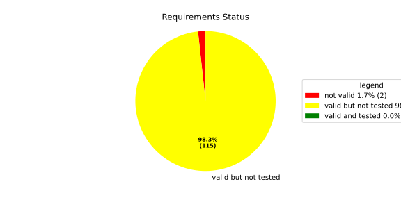
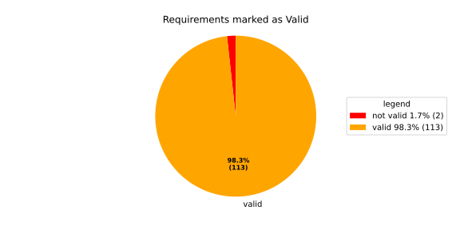
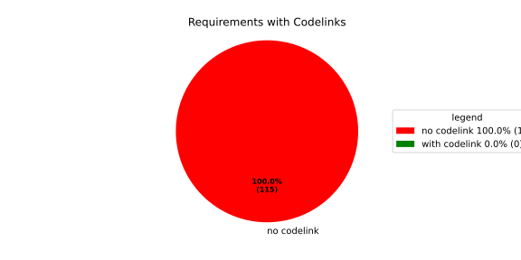

Component Requirements Statistics#
Overview#

In Detail#


No needs passed the filters
Failed Tests
Hint: This table should be empty. Before a PR can be merged all tests have to be successful.
No needs passed the filters
Skipped / Disabled Tests
No needs passed the filters
All passed Tests#
No needs passed the filters
Details About Testcases#
No needs passed the filters
No needs passed the filters
Test Log Files#
tests-report/score/health_monitor/src/rust/tests/test.log
exec ${PAGER:-/usr/bin/less} "$0" || exit 1
Executing tests from //score/health_monitor/src/rust:tests
-----------------------------------------------------------------------------
running 232 tests
test common::tests::duration_to_int_too_large - should panic ... ok
test common::tests::time_offset_diff_too_large - should panic ... ok
test common::tests::time_offset_valid ... ok
test common::tests::time_offset_wrong_order ... ok
test common::tests::time_range_from_interval_lower_too_large - should panic ... ok
test common::tests::time_range_from_interval_valid ... ok
test common::tests::time_range_new_valid ... ok
test common::tests::time_range_new_wrong_order - should panic ... ok
test deadline::common::tests::acquire_and_release_deadline ... ok
test deadline::common::tests::new_and_fields ... ok
test common::tests::duration_to_int_valid ... ok
test deadline::deadline_monitor::tests::deadline_failed_on_first_run_and_then_restarted_is_evaluated_as_error ... ok
test deadline::deadline_monitor::tests::deadline_outside_time_range_is_error_when_dropped_after_evaluate ... ok
test deadline::common::tests::concurrent_acquire ... ok
test deadline::deadline_monitor::tests::get_deadline_unknown_tag ... ok
test deadline::deadline_monitor::tests::start_stop_deadline_outside_ranges_is_evaluated_as_error ... ok
test deadline::deadline_monitor::tests::start_stop_deadline_outside_ranges_is_error_when_dropped_before_evaluate ... ok
test deadline::deadline_state::tests::as_u64_and_new ... ok
test deadline::deadline_state::tests::deadline_state_default_and_snapshot ... ok
test deadline::deadline_state::tests::deadline_state_update_none_returns_err ... ok
test deadline::deadline_state::tests::default_state ... ok
test deadline::deadline_state::tests::set_and_get_timestamp_ms ... ok
test deadline::deadline_state::tests::deadline_state_update_success ... ok
test deadline::deadline_state::tests::set_running ... ok
test deadline::deadline_state::tests::set_underrun ... ok
test deadline::ffi::tests::deadline_destroy_null_deadline ... ok
test deadline::ffi::tests::deadline_monitor_builder_add_deadline_invalid_range ... ok
test deadline::ffi::tests::deadline_monitor_builder_add_deadline_null_builder ... ok
test deadline::ffi::tests::deadline_monitor_builder_add_deadline_null_deadline_tag ... ok
test deadline::ffi::tests::deadline_monitor_builder_add_deadline_succeeds ... ok
test deadline::ffi::tests::deadline_monitor_builder_create_null_builder ... ok
test deadline::ffi::tests::deadline_monitor_builder_create_succeeds ... ok
test deadline::ffi::tests::deadline_monitor_builder_destroy_null_builder ... ok
test deadline::ffi::tests::deadline_monitor_destroy_null_monitor ... ok
test deadline::ffi::tests::deadline_monitor_get_deadline_null_deadline_handle ... ok
test deadline::ffi::tests::deadline_monitor_get_deadline_null_deadline_tag ... ok
test deadline::ffi::tests::deadline_monitor_get_deadline_null_monitor ... ok
test deadline::ffi::tests::deadline_monitor_get_deadline_unknown_deadline ... ok
test deadline::ffi::tests::deadline_monitor_get_deadline_succeeds ... ok
test deadline::ffi::tests::deadline_start_already_started ... ok
test deadline::ffi::tests::deadline_start_null_deadline ... ok
test deadline::ffi::tests::deadline_stop_null_deadline ... ok
test deadline::ffi::tests::deadline_start_succeeds ... ok
test deadline::ffi::tests::deadline_stop_succeeds ... ok
test ffi::tests::health_monitor_builder_add_deadline_monitor_null_deadline_monitor_builder ... ok
test ffi::tests::health_monitor_builder_add_deadline_monitor_null_hmon_builder ... ok
test ffi::tests::health_monitor_builder_add_deadline_monitor_null_monitor_tag ... ok
test ffi::tests::health_monitor_builder_add_deadline_monitor_succeeds ... ok
test ffi::tests::health_monitor_builder_add_heartbeat_monitor_null_hmon_builder ... ok
test ffi::tests::health_monitor_builder_add_heartbeat_monitor_null_heartbeat_monitor_builder ... ok
test ffi::tests::health_monitor_builder_add_heartbeat_monitor_null_monitor_tag ... ok
test ffi::tests::health_monitor_builder_add_heartbeat_monitor_succeeds ... ok
test ffi::tests::health_monitor_builder_add_logic_monitor_null_hmon_builder ... ok
test ffi::tests::health_monitor_builder_add_logic_monitor_null_logic_monitor_builder ... ok
test ffi::tests::health_monitor_builder_add_logic_monitor_null_monitor_tag ... ok
test ffi::tests::health_monitor_builder_add_logic_monitor_succeeds ... ok
test ffi::tests::health_monitor_builder_build_invalid_cycle_intervals ... ok
test ffi::tests::health_monitor_builder_build_no_monitors ... ok
test ffi::tests::health_monitor_builder_build_null_builder_handle ... ok
test ffi::tests::health_monitor_builder_build_null_monitor_handle ... ok
test ffi::tests::health_monitor_builder_build_succeeds ... ok
test ffi::tests::health_monitor_builder_build_thread_parameters ... ok
test ffi::tests::health_monitor_builder_build_valid_cycle_intervals_succeeds ... ok
test ffi::tests::health_monitor_builder_create_null_handle ... ok
test ffi::tests::health_monitor_builder_create_succeeds ... ok
test ffi::tests::health_monitor_builder_destroy_null_handle ... ok
test ffi::tests::health_monitor_destroy_null_hmon ... ok
test ffi::tests::health_monitor_get_deadline_monitor_already_taken ... ok
test ffi::tests::health_monitor_get_deadline_monitor_null_deadline_monitor ... ok
test ffi::tests::health_monitor_get_deadline_monitor_null_hmon ... ok
test ffi::tests::health_monitor_get_deadline_monitor_null_monitor_tag ... ok
test ffi::tests::health_monitor_get_deadline_monitor_succeeds ... ok
test ffi::tests::health_monitor_get_heartbeat_monitor_already_taken ... ok
test ffi::tests::health_monitor_get_heartbeat_monitor_null_heartbeat_monitor ... ok
test ffi::tests::health_monitor_get_heartbeat_monitor_null_monitor_tag ... ok
test ffi::tests::health_monitor_get_heartbeat_monitor_null_hmon ... ok
test ffi::tests::health_monitor_get_heartbeat_monitor_succeeds ... ok
test ffi::tests::health_monitor_get_logic_monitor_already_taken ... ok
test ffi::tests::health_monitor_get_logic_monitor_null_hmon ... ok
test ffi::tests::health_monitor_get_logic_monitor_null_logic_monitor ... ok
test ffi::tests::health_monitor_get_logic_monitor_null_monitor_tag ... ok
test ffi::tests::health_monitor_get_logic_monitor_succeeds ... ok
test ffi::tests::health_monitor_start_null_hmon ... ok
test ffi::tests::health_monitor_start_monitor_not_taken ... ok
test health_monitor::tests::health_monitor_builder_build_invalid_cycles ... ok
test health_monitor::tests::health_monitor_builder_build_no_monitors ... ok
test health_monitor::tests::health_monitor_builder_build_succeeds ... ok
test health_monitor::tests::health_monitor_builder_new_succeeds ... ok
test health_monitor::tests::health_monitor_get_deadline_monitor_available ... ok
test health_monitor::tests::health_monitor_get_deadline_monitor_invalid_state ... ok
test health_monitor::tests::health_monitor_get_deadline_monitor_taken ... ok
test health_monitor::tests::health_monitor_get_deadline_monitor_unknown ... ok
test health_monitor::tests::health_monitor_get_heartbeat_monitor_available ... ok
test health_monitor::tests::health_monitor_get_heartbeat_monitor_invalid_state ... ok
test health_monitor::tests::health_monitor_get_heartbeat_monitor_taken ... ok
test health_monitor::tests::health_monitor_get_heartbeat_monitor_unknown ... ok
test health_monitor::tests::health_monitor_get_logic_monitor_available ... ok
test health_monitor::tests::health_monitor_get_logic_monitor_invalid_state ... ok
[2026/06/01 13:07:08.7969051][7815][HMON][INFO] Monitoring thread started.
[2026/06/01 13:07:08.7969244][7815][HMON][INFO] Monitoring thread exiting.
test ffi::tests::health_monitor_start_succeeds ... ok
test health_monitor::tests::health_monitor_get_logic_monitor_taken ... ok
test health_monitor::tests::health_monitor_get_logic_monitor_unknown ... ok
[2026/06/01 13:07:08.7984349][7815][HMON][INFO] Monitoring thread started.
[2026/06/01 13:07:08.7984505][7815][HMON][INFO] Monitoring thread exiting.
test health_monitor::tests::health_monitor_start_monitors_not_taken - should panic ... ok
test health_monitor::tests::health_monitor_start_succeeds ... ok
test heartbeat::ffi::tests::heartbeat_monitor_builder_create_invalid_range ... ok
test heartbeat::ffi::tests::heartbeat_monitor_builder_create_null_builder ... ok
test heartbeat::ffi::tests::heartbeat_monitor_builder_create_succeeds ... ok
test heartbeat::ffi::tests::heartbeat_monitor_builder_destroy_null_builder ... ok
test heartbeat::ffi::tests::heartbeat_monitor_heartbeat_null_monitor ... ok
test heartbeat::ffi::tests::heartbeat_monitor_heartbeat_succeeds ... ok
test heartbeat::ffi::tests::heartbeat_monitor_destroy_null_monitor ... ok
test deadline::deadline_monitor::tests::monitor_with_multiple_running_deadlines ... ok
test heartbeat::heartbeat_monitor::tests::heartbeat_monitor_beat_early_evaluate_early ... ok
test heartbeat::heartbeat_monitor::tests::heartbeat_monitor_beat_early_evaluate_in_range ... ok
test heartbeat::heartbeat_monitor::tests::heartbeat_monitor_beat_in_range_evaluate_in_range ... ok
test heartbeat::heartbeat_monitor::tests::heartbeat_monitor_beat_early_evaluate_late ... ok
test heartbeat::heartbeat_monitor::tests::heartbeat_monitor_builder_build_invalid_internal_processing_cycle ... ok
test heartbeat::heartbeat_monitor::tests::heartbeat_monitor_builder_build_ok ... ok
test heartbeat::heartbeat_monitor::tests::heartbeat_monitor_beat_in_range_evaluate_late ... ok
test heartbeat::heartbeat_monitor::tests::heartbeat_monitor_beat_late_evaluate_late ... ok
test heartbeat::heartbeat_monitor::tests::heartbeat_monitor_cycle_early ... ok
test heartbeat::heartbeat_monitor::tests::heartbeat_monitor_multiple_beats_early_evaluate_early ... ok
test heartbeat::heartbeat_monitor::tests::heartbeat_monitor_cycle_in_range ... ok
test heartbeat::heartbeat_monitor::tests::heartbeat_monitor_multiple_beats_early_evaluate_in_range ... ok
test heartbeat::heartbeat_monitor::tests::heartbeat_monitor_multiple_beats_in_range_evaluate_in_range ... ok
test heartbeat::heartbeat_monitor::tests::heartbeat_monitor_cycle_late ... ok
test heartbeat::heartbeat_monitor::tests::heartbeat_monitor_multiple_beats_early_evaluate_late ... ok
test heartbeat::heartbeat_monitor::tests::heartbeat_monitor_no_beat_evaluate_early ... ok
test heartbeat::heartbeat_monitor::tests::heartbeat_monitor_no_beat_evaluate_in_range ... ok
test heartbeat::heartbeat_monitor::tests::heartbeat_monitor_multiple_beats_in_range_evaluate_late ... ok
test heartbeat::heartbeat_monitor::tests::heartbeat_monitor_multiple_beats_late_evaluate_late ... ok
test heartbeat::heartbeat_state::tests::snapshot_counter_increment ... ok
test heartbeat::heartbeat_state::tests::snapshot_default ... ok
test heartbeat::heartbeat_state::tests::snapshot_from_u64_max ... ok
test heartbeat::heartbeat_state::tests::snapshot_from_u64_valid ... ok
test heartbeat::heartbeat_state::tests::snapshot_from_u64_zero ... ok
test heartbeat::heartbeat_state::tests::snapshot_new_succeeds ... ok
test heartbeat::heartbeat_state::tests::snapshot_set_heartbeat_timestamp_out_of_range - should panic ... ok
test heartbeat::heartbeat_state::tests::snapshot_set_heartbeat_timestamp_valid ... ok
test heartbeat::heartbeat_state::tests::state_default ... ok
test heartbeat::heartbeat_state::tests::state_new ... ok
test heartbeat::heartbeat_state::tests::state_reset ... ok
test heartbeat::heartbeat_state::tests::state_snapshot ... ok
test heartbeat::heartbeat_state::tests::state_update_none ... ok
test heartbeat::heartbeat_state::tests::state_update_some ... ok
test logic::ffi::tests::logic_monitor_builder_add_state_null_allowed_states_many_elements ... ok
test logic::ffi::tests::logic_monitor_builder_add_state_null_allowed_states_zero_elements ... ok
test logic::ffi::tests::logic_monitor_builder_add_state_null_builder ... ok
test logic::ffi::tests::logic_monitor_builder_add_state_null_tag ... ok
test logic::ffi::tests::logic_monitor_builder_add_state_succeeds ... ok
test logic::ffi::tests::logic_monitor_builder_create_null_builder ... ok
test logic::ffi::tests::logic_monitor_builder_create_null_initial_state ... ok
test logic::ffi::tests::logic_monitor_builder_create_succeeds ... ok
test logic::ffi::tests::logic_monitor_builder_destroy_null_builder ... ok
test logic::ffi::tests::logic_monitor_destroy_null_monitor ... ok
test logic::ffi::tests::logic_monitor_state_fails ... ok
test logic::ffi::tests::logic_monitor_state_null_monitor ... ok
test logic::ffi::tests::logic_monitor_state_null_state ... ok
test logic::ffi::tests::logic_monitor_state_succeeds ... ok
test logic::ffi::tests::logic_monitor_transition_fails ... ok
test logic::ffi::tests::logic_monitor_transition_null_monitor ... ok
test logic::ffi::tests::logic_monitor_transition_null_target_state ... ok
test logic::ffi::tests::logic_monitor_transition_succeeds ... ok
test logic::logic_monitor::tests::logic_monitor_builder_build_no_states ... ok
test logic::logic_monitor::tests::logic_monitor_builder_build_succeeds ... ok
test logic::logic_monitor::tests::logic_monitor_builder_build_undefined_initial_state ... ok
test logic::logic_monitor::tests::logic_monitor_builder_build_undefined_target ... ok
test logic::logic_monitor::tests::logic_monitor_builder_new_succeeds ... ok
test logic::logic_monitor::tests::logic_monitor_evaluate_invalid_state ... ok
test logic::logic_monitor::tests::logic_monitor_evaluate_invalid_transition ... ok
test logic::logic_monitor::tests::logic_monitor_evaluate_succeeds ... ok
test logic::logic_monitor::tests::logic_monitor_state_indeterminate_current_state ... ok
test logic::logic_monitor::tests::logic_monitor_state_succeeds ... ok
test logic::logic_monitor::tests::logic_monitor_transition_indeterminate_current_state ... ok
test logic::logic_monitor::tests::logic_monitor_transition_invalid_transition ... ok
test logic::logic_monitor::tests::logic_monitor_transition_succeeds ... ok
test logic::logic_monitor::tests::logic_monitor_transition_unknown_node ... ok
test logic::logic_state::tests::snapshot_from_u64_max ... ok
test logic::logic_state::tests::snapshot_from_u64_valid ... ok
test logic::logic_state::tests::snapshot_from_u64_zero ... ok
test logic::logic_state::tests::snapshot_new_succeeds ... ok
test logic::logic_state::tests::snapshot_set_current_state_index_valid ... ok
test logic::logic_state::tests::snapshot_set_heartbeat_timestamp_out_of_range - should panic ... ok
test logic::logic_state::tests::snapshot_set_monitor_status_valid ... ok
test logic::logic_state::tests::state_new ... ok
test logic::logic_state::tests::state_snapshot ... ok
test logic::logic_state::tests::state_swap ... ok
test tag::tests::deadline_tag_debug ... ok
test tag::tests::deadline_tag_from_str ... ok
test tag::tests::deadline_tag_from_string ... ok
test tag::tests::deadline_tag_new ... ok
test tag::tests::deadline_tag_score_debug ... ok
test tag::tests::monitor_tag_debug ... ok
test tag::tests::monitor_tag_from_str ... ok
test tag::tests::monitor_tag_from_string ... ok
test tag::tests::monitor_tag_new ... ok
test tag::tests::monitor_tag_score_debug ... ok
test tag::tests::state_tag_debug ... ok
test tag::tests::state_tag_from_str ... ok
test tag::tests::state_tag_from_string ... ok
test tag::tests::state_tag_new ... ok
test tag::tests::state_tag_score_debug ... ok
test tag::tests::tag_debug ... ok
test tag::tests::tag_hash_is_eq ... ok
test tag::tests::tag_hash_is_ne ... ok
test tag::tests::tag_new ... ok
test tag::tests::tag_partial_eq_is_eq ... ok
test tag::tests::tag_partial_eq_is_ne ... ok
test tag::tests::tag_score_debug ... ok
test tag::tests::test_from_str ... ok
test tag::tests::test_from_string ... ok
test thread_ffi::tests::scheduler_policy_priority_max_null_priority ... ok
test thread_ffi::tests::scheduler_policy_priority_max_succeeds ... ok
test thread_ffi::tests::scheduler_policy_priority_min_null_priority ... ok
test thread_ffi::tests::scheduler_policy_priority_min_succeeds ... ok
test thread_ffi::tests::thread_parameters_affinity_null_affinity_many_elements ... ok
test thread_ffi::tests::thread_parameters_affinity_null_affinity_zero_elements ... ok
test thread_ffi::tests::thread_parameters_affinity_null_handle ... ok
test thread_ffi::tests::thread_parameters_affinity_succeeds ... ok
test thread_ffi::tests::thread_parameters_create_succeeds ... ok
test thread_ffi::tests::thread_parameters_destroy_null_handle ... ok
test thread_ffi::tests::thread_parameters_scheduler_parameters_invalid_priority ... ok
test thread_ffi::tests::thread_parameters_scheduler_parameters_null_handle ... ok
test thread_ffi::tests::thread_parameters_scheduler_parameters_succeeds ... ok
test thread_ffi::tests::thread_parameters_stack_size_null_handle ... ok
test thread_ffi::tests::thread_parameters_stack_size_succeeds ... ok
test worker::tests::monitoring_logic_report_alive_on_each_call_when_no_error ... ok
test heartbeat::heartbeat_monitor::tests::heartbeat_monitor_no_beat_evaluate_late ... ok
test worker::tests::monitoring_logic_report_error_when_deadline_failed ... ok
[2026/06/01 13:07:09.7562980][7815][HMON][INFO] Monitoring thread started.
test deadline::deadline_monitor::tests::start_stop_deadline_within_range_works ... ok
[2026/06/01 13:07:09.8167115][7815][HMON][WARN] Deadline (DeadlineTag(deadline_fast)) missed! Expected: 50, now: 60
[2026/06/01 13:07:09.8167394][7815][HMON][WARN] Deadline monitor with tag MonitorTag(deadline_monitor) reported error: TooLate.
[2026/06/01 13:07:09.8167466][7815][HMON][WARN] One or more monitors reported errors, skipping AliveAPI notification.
[2026/06/01 13:07:09.8167535][7815][HMON][INFO] Monitoring logic failed, stopping thread.
[2026/06/01 13:07:09.8167586][7815][HMON][INFO] Monitoring thread exiting.
test worker::tests::monitoring_logic_report_alive_respect_cycle ... ok
test worker::tests::unique_thread_runner_monitoring_works ... ok
test heartbeat::heartbeat_monitor::tests::heartbeat_monitor_timestamp_offset ... ok
test result: ok. 232 passed; 0 failed; 0 ignored; 0 measured; 0 filtered out; finished in 1.27s
tests-report/score/health_monitor/src/rust/loom_tests/test.log
exec ${PAGER:-/usr/bin/less} "$0" || exit 1
Executing tests from //score/health_monitor/src/rust:loom_tests
-----------------------------------------------------------------------------
running 3 tests
test heartbeat::heartbeat_monitor::loom_tests::heartbeat_monitor_heartbeat_evaluate_too_early ... ok
test heartbeat::heartbeat_monitor::loom_tests::heartbeat_monitor_heartbeat_evaluate_in_range ... ok
test heartbeat::heartbeat_monitor::loom_tests::heartbeat_monitor_heartbeat_evaluate_too_late ... ok
test result: ok. 3 passed; 0 failed; 0 ignored; 0 measured; 0 filtered out; finished in 0.71s
tests-report/score/health_monitor/src/cpp/cpp_tests/test.log
exec ${PAGER:-/usr/bin/less} "$0" || exit 1
Executing tests from //score/health_monitor/src/cpp:cpp_tests
-----------------------------------------------------------------------------
Running main() from gmock_main.cc
[==========] Running 1 test from 1 test suite.
[----------] Global test environment set-up.
[----------] 1 test from HealthMonitorTest
[ RUN ] HealthMonitorTest.TestName
[2026/06/01 13:07:10.0989262][score/health_monitor/src/rust/worker.rs:121][8244][HMON][INFO] Monitoring thread started.
[2026/06/01 13:07:10.0990149][score/health_monitor/src/rust/deadline/deadline_monitor.rs:217][8244][HMON][ERROR] Deadline DeadlineTag(deadline_1) stopped too early by 100 ms
[2026/06/01 13:07:10.1497675][score/health_monitor/src/rust/deadline/deadline_monitor.rs:267][8244][HMON][WARN] Deadline (DeadlineTag(deadline_1)) finished too early!
[2026/06/01 13:07:10.1497986][score/health_monitor/src/rust/worker.rs:58][8244][HMON][WARN] Deadline monitor with tag MonitorTag(deadline_monitor) reported error: TooEarly.
[2026/06/01 13:07:10.1498095][score/health_monitor/src/rust/heartbeat/heartbeat_monitor.rs:253][8244][HMON][WARN] Heartbeat occurred too early, offset to range: 100
[2026/06/01 13:07:10.1498145][score/health_monitor/src/rust/worker.rs:64][8244][HMON][WARN] Heartbeat monitor with tag MonitorTag(heartbeat_monitor) reported error: TooEarly.
[2026/06/01 13:07:10.1498203][score/health_monitor/src/rust/worker.rs:85][8244][HMON][WARN] One or more monitors reported errors, skipping AliveAPI notification.
[2026/06/01 13:07:10.1498247][score/health_monitor/src/rust/worker.rs:132][8244][HMON][INFO] Monitoring logic failed, stopping thread.
[2026/06/01 13:07:10.1498288][score/health_monitor/src/rust/worker.rs:139][8244][HMON][INFO] Monitoring thread exiting.
[ OK ] HealthMonitorTest.TestName (51 ms)
[----------] 1 test from HealthMonitorTest (51 ms total)
[----------] Global test environment tear-down
[==========] 1 test from 1 test suite ran. (51 ms total)
[ PASSED ] 1 test.
tests-report/score/launch_manager/exec_error_domain_UT/test.log
exec ${PAGER:-/usr/bin/less} "$0" || exit 1
Executing tests from //score/launch_manager:exec_error_domain_UT
-----------------------------------------------------------------------------
Running main() from gmock_main.cc
[==========] Running 3 tests from 1 test suite.
[----------] Global test environment set-up.
[----------] 3 tests from ExecErrorDomainTest
[ RUN ] ExecErrorDomainTest.AllKnownCodesReturnNonEmptyMessage
[ OK ] ExecErrorDomainTest.AllKnownCodesReturnNonEmptyMessage (0 ms)
[ RUN ] ExecErrorDomainTest.AllKnownCodesHaveDistinctMessages
[ OK ] ExecErrorDomainTest.AllKnownCodesHaveDistinctMessages (0 ms)
[ RUN ] ExecErrorDomainTest.UnknownCodeReturnsNonEmptyMessage
[ OK ] ExecErrorDomainTest.UnknownCodeReturnsNonEmptyMessage (0 ms)
[----------] 3 tests from ExecErrorDomainTest (0 ms total)
[----------] Global test environment tear-down
[==========] 3 tests from 1 test suite ran. (0 ms total)
[ PASSED ] 3 tests.
tests-report/score/launch_manager/daemon/src/process_state_client/process_state_client_ut/test.log
exec ${PAGER:-/usr/bin/less} "$0" || exit 1
Executing tests from //score/launch_manager/daemon/src/process_state_client:process_state_client_ut
-----------------------------------------------------------------------------
Running main() from gmock_main.cc
[==========] Running 4 tests from 1 test suite.
[----------] Global test environment set-up.
[----------] 4 tests from ProcessStateClient_UT
[ RUN ] ProcessStateClient_UT.ProcessStateClient_ConstructReceiver_Succeeds
[ OK ] ProcessStateClient_UT.ProcessStateClient_ConstructReceiver_Succeeds (0 ms)
[ RUN ] ProcessStateClient_UT.ProcessStateClient_QueueOneProcess_Succeeds
[ OK ] ProcessStateClient_UT.ProcessStateClient_QueueOneProcess_Succeeds (0 ms)
[ RUN ] ProcessStateClient_UT.ProcessStateClient_QueueMaxNumberOfProcesses_Succeeds
[ OK ] ProcessStateClient_UT.ProcessStateClient_QueueMaxNumberOfProcesses_Succeeds (8 ms)
[ RUN ] ProcessStateClient_UT.ProcessStateClient_QueueOneProcessTooMany_Fails
mw::log initialization error: Error No logging configuration files could be found. occurred with context information: Failed to load configuration files. Fallback to console logging.
2026/06/01 13:07:07.9227519 1538361 000 ECU1 NONE LM log error verbose 1 Failed to queue posix process
2026/06/01 13:07:07.9227520 1538363 000 ECU1 NONE LM log error verbose 1 ProcessStateReceiver::getNextChangedPosixProcess: Overflow occurred, will be reported as kCommunicationError
[ OK ] ProcessStateClient_UT.ProcessStateClient_QueueOneProcessTooMany_Fails (5 ms)
[----------] 4 tests from ProcessStateClient_UT (15 ms total)
[----------] Global test environment tear-down
[==========] 4 tests from 1 test suite ran. (15 ms total)
[ PASSED ] 4 tests.
tests-report/score/launch_manager/daemon/src/recovery_client/recovery_client_UT/test.log
exec ${PAGER:-/usr/bin/less} "$0" || exit 1
Executing tests from //score/launch_manager/daemon/src/recovery_client:recovery_client_UT
-----------------------------------------------------------------------------
Running main() from gmock_main.cc
[==========] Running 5 tests from 1 test suite.
[----------] Global test environment set-up.
[----------] 5 tests from RecoveryClientTest
[ RUN ] RecoveryClientTest.SendSingleRequest
[ OK ] RecoveryClientTest.SendSingleRequest (0 ms)
[ RUN ] RecoveryClientTest.GetNextRequest
[ OK ] RecoveryClientTest.GetNextRequest (0 ms)
[ RUN ] RecoveryClientTest.GetNextRequestEmpty
[ OK ] RecoveryClientTest.GetNextRequestEmpty (0 ms)
[ RUN ] RecoveryClientTest.RingBufferFull
[ OK ] RecoveryClientTest.RingBufferFull (0 ms)
[ RUN ] RecoveryClientTest.FIFOOrdering
[ OK ] RecoveryClientTest.FIFOOrdering (3 ms)
[----------] 5 tests from RecoveryClientTest (3 ms total)
[----------] Global test environment tear-down
[==========] 5 tests from 1 test suite ran. (3 ms total)
[ PASSED ] 5 tests.
tests-report/score/launch_manager/daemon/src/alive_monitor/details/supervision/Alive_UT/test.log
exec ${PAGER:-/usr/bin/less} "$0" || exit 1
Executing tests from //score/launch_manager/daemon/src/alive_monitor/details/supervision:Alive_UT
-----------------------------------------------------------------------------
Running main() from gmock_main.cc
[==========] Running 4 tests from 1 test suite.
[----------] Global test environment set-up.
[----------] 4 tests from AliveSupervisionTest
[ RUN ] AliveSupervisionTest.AliveTransitionsOkToExpiredOnMissingHeartbeat
mw::log initialization error: Error No logging configuration files could be found. occurred with context information: Failed to load configuration files. Fallback to console logging.
2026/06/02 11:29:03.9743212 1236738 000 ECU1 NONE Sprv log warn verbose 13 Alive Supervision ( test_alive ) switched to EXPIRED , due to 0 reported alive indication(s) (expected >= 1 ). Failed supervision cycles: 0 / 0
[ OK ] AliveSupervisionTest.AliveTransitionsOkToExpiredOnMissingHeartbeat (4 ms)
[ RUN ] AliveSupervisionTest.AliveStaysOkWithCorrectHeartbeats
[ OK ] AliveSupervisionTest.AliveStaysOkWithCorrectHeartbeats (0 ms)
[ RUN ] AliveSupervisionTest.AliveReportsEnqueueFailureWhenRingBufferFull
2026/06/02 11:29:03.9743213 1236748 000 ECU1 NONE Sprv log warn verbose 13 Alive Supervision ( test_alive ) switched to EXPIRED , due to 0 reported alive indication(s) (expected >= 1 ). Failed supervision cycles: 0 / 0
2026/06/02 11:29:03.9743213 1236749 000 ECU1 NONE Sprv log error verbose 3 Failed to enqueue recovery request for alive supervision test_alive failure (ring buffer full)
[ OK ] AliveSupervisionTest.AliveReportsEnqueueFailureWhenRingBufferFull (0 ms)
[ RUN ] AliveSupervisionTest.AliveDebouncesThroughFailedBeforeExpired
2026/06/02 11:29:03.9743214 1236752 000 ECU1 NONE Sprv log warn verbose 13 Alive Supervision ( test_alive ) switched to FAILED , due to 0 reported alive indication(s) (expected >= 1 ). Failed supervision cycles: 1 / 1
2026/06/02 11:29:03.9743214 1236752 000 ECU1 NONE Sprv log warn verbose 13 Alive Supervision ( test_alive ) switched to EXPIRED , due to 0 reported alive indication(s) (expected >= 1 ). Failed supervision cycles: 2 / 1
[ OK ] AliveSupervisionTest.AliveDebouncesThroughFailedBeforeExpired (0 ms)
[----------] 4 tests from AliveSupervisionTest (5 ms total)
[----------] Global test environment tear-down
[==========] 4 tests from 1 test suite ran. (5 ms total)
[ PASSED ] 4 tests.
tests-report/score/launch_manager/daemon/src/alive_monitor/details/ifappl/MonitorIfDaemon_UT/test.log
exec ${PAGER:-/usr/bin/less} "$0" || exit 1
Executing tests from //score/launch_manager/daemon/src/alive_monitor/details/ifappl:MonitorIfDaemon_UT
-----------------------------------------------------------------------------
Running main() from gmock_main.cc
[==========] Running 16 tests from 1 test suite.
[----------] Global test environment set-up.
[----------] 16 tests from MonitorIfDaemonTest
[ RUN ] MonitorIfDaemonTest.GetInterfaceName_ReturnsNameGivenAtConstruction
mw::log initialization error: Error No logging configuration files could be found. occurred with context information: Failed to load configuration files. Fallback to console logging.
[ OK ] MonitorIfDaemonTest.GetInterfaceName_ReturnsNameGivenAtConstruction (2 ms)
[ RUN ] MonitorIfDaemonTest.InitiallyInactive_CheckForNewData_DoesNotNotifyCheckpoint
[ OK ] MonitorIfDaemonTest.InitiallyInactive_CheckForNewData_DoesNotNotifyCheckpoint (0 ms)
[ RUN ] MonitorIfDaemonTest.ProcessOffBeforeActivation_RemainsInactive
[ OK ] MonitorIfDaemonTest.ProcessOffBeforeActivation_RemainsInactive (0 ms)
[ RUN ] MonitorIfDaemonTest.ProcessRunning_ActivatesMonitorOnNextCheckForNewData
[ OK ] MonitorIfDaemonTest.ProcessRunning_ActivatesMonitorOnNextCheckForNewData (0 ms)
[ RUN ] MonitorIfDaemonTest.ProcessStarting_AlsoActivatesMonitor
[ OK ] MonitorIfDaemonTest.ProcessStarting_AlsoActivatesMonitor (0 ms)
[ RUN ] MonitorIfDaemonTest.ProcessOff_DeactivatesMonitor_NoFurtherDataForwarded
[ OK ] MonitorIfDaemonTest.ProcessOff_DeactivatesMonitor_NoFurtherDataForwarded (0 ms)
[ RUN ] MonitorIfDaemonTest.Active_CheckpointDataForwarded
[ OK ] MonitorIfDaemonTest.Active_CheckpointDataForwarded (0 ms)
[ RUN ] MonitorIfDaemonTest.Active_FutureTimestamp_NotForwardedInCurrentCycle
[ OK ] MonitorIfDaemonTest.Active_FutureTimestamp_NotForwardedInCurrentCycle (0 ms)
[ RUN ] MonitorIfDaemonTest.Active_FutureTimestampCheckpoint_ConsumedInLaterCycle
[ OK ] MonitorIfDaemonTest.Active_FutureTimestampCheckpoint_ConsumedInLaterCycle (0 ms)
[ RUN ] MonitorIfDaemonTest.Active_NonMatchingCheckpointId_NotForwarded
[ OK ] MonitorIfDaemonTest.Active_NonMatchingCheckpointId_NotForwarded (0 ms)
[ RUN ] MonitorIfDaemonTest.Active_MultipleCheckpointsInOneCycle_AllForwarded
[ OK ] MonitorIfDaemonTest.Active_MultipleCheckpointsInOneCycle_AllForwarded (0 ms)
[ RUN ] MonitorIfDaemonTest.Active_TwoAttachedCheckpoints_RoutedByCheckpointId
[ OK ] MonitorIfDaemonTest.Active_TwoAttachedCheckpoints_RoutedByCheckpointId (0 ms)
[ RUN ] MonitorIfDaemonTest.Active_OverflowDetected_TransitionsToInactiveOverflow
2026/06/02 11:29:03.9743320 1237821 000 ECU1 NONE Sprv log warn verbose 3 MonitorInterface: Potential data loss of checkpoint ring buffer occurred. Instance: test_interface
[ OK ] MonitorIfDaemonTest.Active_OverflowDetected_TransitionsToInactiveOverflow (1 ms)
[ RUN ] MonitorIfDaemonTest.InactiveOverflow_NoProcessRestart_DoesNotRepeatNotification
2026/06/02 11:29:03.9743321 1237825 000 ECU1 NONE Sprv log warn verbose 3 MonitorInterface: Potential data loss of checkpoint ring buffer occurred. Instance: test_interface
[ OK ] MonitorIfDaemonTest.InactiveOverflow_NoProcessRestart_DoesNotRepeatNotification (0 ms)
[ RUN ] MonitorIfDaemonTest.InactiveOverflow_ProcessRestarts_PushesOverflowNotificationAgain
2026/06/02 11:29:03.9743321 1237828 000 ECU1 NONE Sprv log warn verbose 3 MonitorInterface: Potential data loss of checkpoint ring buffer occurred. Instance: test_interface
[ OK ] MonitorIfDaemonTest.InactiveOverflow_ProcessRestarts_PushesOverflowNotificationAgain (0 ms)
[ RUN ] MonitorIfDaemonTest.InactiveOverflow_ProcessRestartFlag_ClearedAfterNotification
2026/06/02 11:29:03.9743322 1237831 000 ECU1 NONE Sprv log warn verbose 3 MonitorInterface: Potential data loss of checkpoint ring buffer occurred. Instance: test_interface
[ OK ] MonitorIfDaemonTest.InactiveOverflow_ProcessRestartFlag_ClearedAfterNotification (0 ms)
[----------] 16 tests from MonitorIfDaemonTest (6 ms total)
[----------] Global test environment tear-down
[==========] 16 tests from 1 test suite ran. (7 ms total)
[ PASSED ] 16 tests.
tests-report/score/launch_manager/daemon/src/common/identifier_hash_UT/test.log
exec ${PAGER:-/usr/bin/less} "$0" || exit 1
Executing tests from //score/launch_manager/daemon/src/common:identifier_hash_UT
-----------------------------------------------------------------------------
Running main() from gmock_main.cc
[==========] Running 7 tests from 1 test suite.
[----------] Global test environment set-up.
[----------] 7 tests from IdentifierHashTest
[ RUN ] IdentifierHashTest.IdentifierHash_with_string_view_created
[ OK ] IdentifierHashTest.IdentifierHash_with_string_view_created (0 ms)
[ RUN ] IdentifierHashTest.IdentifierHash_with_string_created
[ OK ] IdentifierHashTest.IdentifierHash_with_string_created (0 ms)
[ RUN ] IdentifierHashTest.IdentifierHash_default_created
[ OK ] IdentifierHashTest.IdentifierHash_default_created (0 ms)
[ RUN ] IdentifierHashTest.IdentifierHash_invalid_hash_no_string_representation
[ OK ] IdentifierHashTest.IdentifierHash_invalid_hash_no_string_representation (0 ms)
[ RUN ] IdentifierHashTest.IdentifierHash_no_dangling_pointer_after_source_string_dies
[ OK ] IdentifierHashTest.IdentifierHash_no_dangling_pointer_after_source_string_dies (0 ms)
[ RUN ] IdentifierHashTest.IdentifierHash_EqualityOperators
[ OK ] IdentifierHashTest.IdentifierHash_EqualityOperators (0 ms)
[ RUN ] IdentifierHashTest.IdentifierHash_LessThanOperator
[ OK ] IdentifierHashTest.IdentifierHash_LessThanOperator (0 ms)
[----------] 7 tests from IdentifierHashTest (0 ms total)
[----------] Global test environment tear-down
[==========] 7 tests from 1 test suite ran. (0 ms total)
[ PASSED ] 7 tests.
tests-report/score/launch_manager/daemon/src/common/concurrency/mpmc_concurrent_queue_tsan_test/test.log
exec ${PAGER:-/usr/bin/less} "$0" || exit 1
Executing tests from //score/launch_manager/daemon/src/common/concurrency:mpmc_concurrent_queue_tsan_test
-----------------------------------------------------------------------------
Running main() from gmock_main.cc
[==========] Running 15 tests from 5 test suites.
[----------] Global test environment set-up.
[----------] 5 tests from MPMCConcurrentQueueTest_Basic
[ RUN ] MPMCConcurrentQueueTest_Basic.PushAndPopSingleItem
[ OK ] MPMCConcurrentQueueTest_Basic.PushAndPopSingleItem (0 ms)
[ RUN ] MPMCConcurrentQueueTest_Basic.PushAndPopPreservesOrder
[ OK ] MPMCConcurrentQueueTest_Basic.PushAndPopPreservesOrder (0 ms)
[ RUN ] MPMCConcurrentQueueTest_Basic.LvaluePushCopiesItem
[ OK ] MPMCConcurrentQueueTest_Basic.LvaluePushCopiesItem (0 ms)
[ RUN ] MPMCConcurrentQueueTest_Basic.RvaluePushWorksWithMoveOnlyType
[ OK ] MPMCConcurrentQueueTest_Basic.RvaluePushWorksWithMoveOnlyType (0 ms)
[ RUN ] MPMCConcurrentQueueTest_Basic.PopReturnsNulloptOnSemaphoreWaitFailure
[ OK ] MPMCConcurrentQueueTest_Basic.PopReturnsNulloptOnSemaphoreWaitFailure (20 ms)
[----------] 5 tests from MPMCConcurrentQueueTest_Basic (21 ms total)
[----------] 2 tests from MPMCConcurrentQueueTest_Timeout
[ RUN ] MPMCConcurrentQueueTest_Timeout.PushWithTimeoutSucceedsWhenSlotAvailable
[ OK ] MPMCConcurrentQueueTest_Timeout.PushWithTimeoutSucceedsWhenSlotAvailable (0 ms)
[ RUN ] MPMCConcurrentQueueTest_Timeout.PushWithTimeoutReturnsFalseWhenFull
[ OK ] MPMCConcurrentQueueTest_Timeout.PushWithTimeoutReturnsFalseWhenFull (20 ms)
[----------] 2 tests from MPMCConcurrentQueueTest_Timeout (20 ms total)
[----------] 3 tests from MPMCConcurrentQueueTest_Stop
[ RUN ] MPMCConcurrentQueueTest_Stop.PushReturnsFalseAfterStop
[ OK ] MPMCConcurrentQueueTest_Stop.PushReturnsFalseAfterStop (0 ms)
[ RUN ] MPMCConcurrentQueueTest_Stop.PopReturnsNulloptWhenStoppedAndEmpty
[ OK ] MPMCConcurrentQueueTest_Stop.PopReturnsNulloptWhenStoppedAndEmpty (0 ms)
[ RUN ] MPMCConcurrentQueueTest_Stop.ItemsAreDroppedAfterStop
[ OK ] MPMCConcurrentQueueTest_Stop.ItemsAreDroppedAfterStop (0 ms)
[----------] 3 tests from MPMCConcurrentQueueTest_Stop (0 ms total)
[----------] 4 tests from MPMCConcurrentQueueTest_Blocking
[ RUN ] MPMCConcurrentQueueTest_Blocking.PopBlocksUntilItemAvailable
[ OK ] MPMCConcurrentQueueTest_Blocking.PopBlocksUntilItemAvailable (0 ms)
[ RUN ] MPMCConcurrentQueueTest_Blocking.PushBlocksWhenFull
[ OK ] MPMCConcurrentQueueTest_Blocking.PushBlocksWhenFull (0 ms)
[ RUN ] MPMCConcurrentQueueTest_Blocking.StopUnblocksBlockedConsumer
[ OK ] MPMCConcurrentQueueTest_Blocking.StopUnblocksBlockedConsumer (0 ms)
[ RUN ] MPMCConcurrentQueueTest_Blocking.StopUnblocksBlockedProducer
[ OK ] MPMCConcurrentQueueTest_Blocking.StopUnblocksBlockedProducer (0 ms)
[----------] 4 tests from MPMCConcurrentQueueTest_Blocking (0 ms total)
[----------] 1 test from MPMCConcurrentQueueTest_MPMC
[ RUN ] MPMCConcurrentQueueTest_MPMC.AllItemsDelivered
[ OK ] MPMCConcurrentQueueTest_MPMC.AllItemsDelivered (1 ms)
[----------] 1 test from MPMCConcurrentQueueTest_MPMC (1 ms total)
[----------] Global test environment tear-down
[==========] 15 tests from 5 test suites ran. (45 ms total)
[ PASSED ] 15 tests.
tests-report/score/launch_manager/daemon/src/common/concurrency/mpmc_concurrent_queue_test/test.log
exec ${PAGER:-/usr/bin/less} "$0" || exit 1
Executing tests from //score/launch_manager/daemon/src/common/concurrency:mpmc_concurrent_queue_test
-----------------------------------------------------------------------------
Running main() from gmock_main.cc
[==========] Running 15 tests from 5 test suites.
[----------] Global test environment set-up.
[----------] 5 tests from MPMCConcurrentQueueTest_Basic
[ RUN ] MPMCConcurrentQueueTest_Basic.PushAndPopSingleItem
[ OK ] MPMCConcurrentQueueTest_Basic.PushAndPopSingleItem (0 ms)
[ RUN ] MPMCConcurrentQueueTest_Basic.PushAndPopPreservesOrder
[ OK ] MPMCConcurrentQueueTest_Basic.PushAndPopPreservesOrder (0 ms)
[ RUN ] MPMCConcurrentQueueTest_Basic.LvaluePushCopiesItem
[ OK ] MPMCConcurrentQueueTest_Basic.LvaluePushCopiesItem (0 ms)
[ RUN ] MPMCConcurrentQueueTest_Basic.RvaluePushWorksWithMoveOnlyType
[ OK ] MPMCConcurrentQueueTest_Basic.RvaluePushWorksWithMoveOnlyType (0 ms)
[ RUN ] MPMCConcurrentQueueTest_Basic.PopReturnsNulloptOnSemaphoreWaitFailure
[ OK ] MPMCConcurrentQueueTest_Basic.PopReturnsNulloptOnSemaphoreWaitFailure (20 ms)
[----------] 5 tests from MPMCConcurrentQueueTest_Basic (20 ms total)
[----------] 2 tests from MPMCConcurrentQueueTest_Timeout
[ RUN ] MPMCConcurrentQueueTest_Timeout.PushWithTimeoutSucceedsWhenSlotAvailable
[ OK ] MPMCConcurrentQueueTest_Timeout.PushWithTimeoutSucceedsWhenSlotAvailable (0 ms)
[ RUN ] MPMCConcurrentQueueTest_Timeout.PushWithTimeoutReturnsFalseWhenFull
[ OK ] MPMCConcurrentQueueTest_Timeout.PushWithTimeoutReturnsFalseWhenFull (20 ms)
[----------] 2 tests from MPMCConcurrentQueueTest_Timeout (20 ms total)
[----------] 3 tests from MPMCConcurrentQueueTest_Stop
[ RUN ] MPMCConcurrentQueueTest_Stop.PushReturnsFalseAfterStop
[ OK ] MPMCConcurrentQueueTest_Stop.PushReturnsFalseAfterStop (0 ms)
[ RUN ] MPMCConcurrentQueueTest_Stop.PopReturnsNulloptWhenStoppedAndEmpty
[ OK ] MPMCConcurrentQueueTest_Stop.PopReturnsNulloptWhenStoppedAndEmpty (0 ms)
[ RUN ] MPMCConcurrentQueueTest_Stop.ItemsAreDroppedAfterStop
[ OK ] MPMCConcurrentQueueTest_Stop.ItemsAreDroppedAfterStop (0 ms)
[----------] 3 tests from MPMCConcurrentQueueTest_Stop (0 ms total)
[----------] 4 tests from MPMCConcurrentQueueTest_Blocking
[ RUN ] MPMCConcurrentQueueTest_Blocking.PopBlocksUntilItemAvailable
[ OK ] MPMCConcurrentQueueTest_Blocking.PopBlocksUntilItemAvailable (0 ms)
[ RUN ] MPMCConcurrentQueueTest_Blocking.PushBlocksWhenFull
[ OK ] MPMCConcurrentQueueTest_Blocking.PushBlocksWhenFull (0 ms)
[ RUN ] MPMCConcurrentQueueTest_Blocking.StopUnblocksBlockedConsumer
[ OK ] MPMCConcurrentQueueTest_Blocking.StopUnblocksBlockedConsumer (0 ms)
[ RUN ] MPMCConcurrentQueueTest_Blocking.StopUnblocksBlockedProducer
[ OK ] MPMCConcurrentQueueTest_Blocking.StopUnblocksBlockedProducer (0 ms)
[----------] 4 tests from MPMCConcurrentQueueTest_Blocking (0 ms total)
[----------] 1 test from MPMCConcurrentQueueTest_MPMC
[ RUN ] MPMCConcurrentQueueTest_MPMC.AllItemsDelivered
[ OK ] MPMCConcurrentQueueTest_MPMC.AllItemsDelivered (0 ms)
[----------] 1 test from MPMCConcurrentQueueTest_MPMC (0 ms total)
[----------] Global test environment tear-down
[==========] 15 tests from 5 test suites ran. (42 ms total)
[ PASSED ] 15 tests.
tests-report/tests/integration/smoke/smoke/test.log
exec ${PAGER:-/usr/bin/less} "$0" || exit 1
Executing tests from //tests/integration/smoke:smoke
-----------------------------------------------------------------------------
============================= test session starts ==============================
platform linux -- Python 3.12.12, pytest-9.0.3, pluggy-1.5.0
rootdir: /home/runner/.bazel/sandbox/processwrapper-sandbox/863/execroot/_main/bazel-out/k8-fastbuild/bin/tests/integration/smoke/smoke.runfiles/score_itf+
configfile: pytest.ini
collected 1 item
../score_itf+::test_smoke
-------------------------------- live log setup --------------------------------
[2026-06-02 11:29:19.020] [INFO] [score.itf.plugins.docker] Executing custom image bootstrap command: tests/utils/environments/x86_64-linux/x86_64-linux.sh
[2026-06-02 11:29:19.215] [DEBUG] [docker.utils.config] Trying paths: ['/home/runner/.docker/config.json', '/home/runner/.dockercfg']
[2026-06-02 11:29:19.215] [DEBUG] [docker.utils.config] Found file at path: /home/runner/.docker/config.json
[2026-06-02 11:29:19.215] [DEBUG] [docker.auth] Found 'auths' section
[2026-06-02 11:29:19.215] [DEBUG] [docker.auth] Found entry (registry='https://index.docker.io/v1/', username='githubactions')
[2026-06-02 11:29:19.226] [DEBUG] [urllib3.connectionpool] http://localhost:None "GET /version HTTP/1.1" 200 823
[2026-06-02 11:29:19.265] [DEBUG] [urllib3.connectionpool] http://localhost:None "POST /v1.48/containers/create HTTP/1.1" 201 88
[2026-06-02 11:29:19.267] [DEBUG] [urllib3.connectionpool] http://localhost:None "GET /v1.48/containers/69c993715d1f5449b030a0941257987e623a53ff0f547bfba8f145b80eb9e0d7/json HTTP/1.1" 200 None
[2026-06-02 11:29:19.452] [DEBUG] [urllib3.connectionpool] http://localhost:None "POST /v1.48/containers/69c993715d1f5449b030a0941257987e623a53ff0f547bfba8f145b80eb9e0d7/start HTTP/1.1" 204 0
[2026-06-02 11:29:19.453] [DEBUG] [docker.utils.config] Trying paths: ['/home/runner/.docker/config.json', '/home/runner/.dockercfg']
[2026-06-02 11:29:19.454] [DEBUG] [docker.utils.config] Found file at path: /home/runner/.docker/config.json
[2026-06-02 11:29:19.454] [DEBUG] [docker.auth] Found 'auths' section
[2026-06-02 11:29:19.454] [DEBUG] [docker.auth] Found entry (registry='https://index.docker.io/v1/', username='githubactions')
[2026-06-02 11:29:19.462] [DEBUG] [urllib3.connectionpool] http://localhost:None "GET /version HTTP/1.1" 200 823
[2026-06-02 11:29:19.467] [DEBUG] [urllib3.connectionpool] http://localhost:None "POST /v1.48/containers/69c993715d1f5449b030a0941257987e623a53ff0f547bfba8f145b80eb9e0d7/exec HTTP/1.1" 201 74
[2026-06-02 11:29:19.470] [DEBUG] [urllib3.connectionpool] http://localhost:None "POST /v1.48/exec/b774f53b11e4667077c580c6a08ddd93c119306081984194b496c3c20eed07e3/start HTTP/1.1" 101 0
[2026-06-02 11:29:19.531] [DEBUG] [urllib3.connectionpool] http://localhost:None "GET /v1.48/exec/b774f53b11e4667077c580c6a08ddd93c119306081984194b496c3c20eed07e3/json HTTP/1.1" 200 390
[2026-06-02 11:29:19.576] [DEBUG] [urllib3.connectionpool] http://localhost:None "PUT /v1.48/containers/69c993715d1f5449b030a0941257987e623a53ff0f547bfba8f145b80eb9e0d7/archive?path=%2Ftmp HTTP/1.1" 200 0
[2026-06-02 11:29:19.577] [DEBUG] [urllib3.connectionpool] http://localhost:None "POST /v1.48/containers/69c993715d1f5449b030a0941257987e623a53ff0f547bfba8f145b80eb9e0d7/exec HTTP/1.1" 201 74
[2026-06-02 11:29:19.580] [DEBUG] [urllib3.connectionpool] http://localhost:None "POST /v1.48/exec/cba08453917bd7345da944715df4fe63860a74d24906c3b8b09579dff56fe3a6/start HTTP/1.1" 101 0
[2026-06-02 11:29:19.704] [DEBUG] [urllib3.connectionpool] http://localhost:None "GET /v1.48/exec/cba08453917bd7345da944715df4fe63860a74d24906c3b8b09579dff56fe3a6/json HTTP/1.1" 200 416
[2026-06-02 11:29:19.705] [INFO] [tests.utils.testing_utils.setup_test] Test case setup finished
-------------------------------- live log call ---------------------------------
[2026-06-02 11:29:19.707] [DEBUG] [urllib3.connectionpool] http://localhost:None "POST /v1.48/containers/69c993715d1f5449b030a0941257987e623a53ff0f547bfba8f145b80eb9e0d7/exec HTTP/1.1" 201 74
[2026-06-02 11:29:19.714] [DEBUG] [urllib3.connectionpool] http://localhost:None "POST /v1.48/exec/b127f675dcb088f38c0252804472956e4be7cddcd36da107420654d616b7e3c6/start HTTP/1.1" 101 0
[2026-06-02 11:29:19.762] [DEBUG] [urllib3.connectionpool] http://localhost:None "GET /v1.48/exec/b127f675dcb088f38c0252804472956e4be7cddcd36da107420654d616b7e3c6/json HTTP/1.1" 200 404
[2026-06-02 11:29:19.764] [DEBUG] [urllib3.connectionpool] http://localhost:None "POST /v1.48/containers/69c993715d1f5449b030a0941257987e623a53ff0f547bfba8f145b80eb9e0d7/exec HTTP/1.1" 201 74
[2026-06-02 11:29:19.766] [DEBUG] [urllib3.connectionpool] http://localhost:None "POST /v1.48/exec/01f1a2ca0d1e7089ebb99073513c9ad3edc46ba780c41c0e2b7594d6cc9f0d36/start HTTP/1.1" 101 0
[2026-06-02 11:29:19.852] [INFO] [launch_manager] mw::log
[2026-06-02 11:29:19.852] [INFO] [launch_manager] initialization error: Error No logging configuration files could be found.
[2026-06-02 11:29:19.852] [INFO] [launch_manager] occurred
[2026-06-02 11:29:19.852] [INFO] [launch_manager] with context information:
[2026-06-02 11:29:19.852] [INFO] [launch_manager] Failed to load configuration files. Fallback to console logging.
[2026-06-02 11:29:19.853] [DEBUG] [urllib3.connectionpool] http://localhost:None "GET /v1.48/exec/01f1a2ca0d1e7089ebb99073513c9ad3edc46ba780c41c0e2b7594d6cc9f0d36/json HTTP/1.1" 200 442
[2026-06-02 11:29:19.854] [DEBUG] [urllib3.connectionpool] http://localhost:None "POST /v1.48/containers/69c993715d1f5449b030a0941257987e623a53ff0f547bfba8f145b80eb9e0d7/exec HTTP/1.1" 201 74
[2026-06-02 11:29:19.859] [DEBUG] [urllib3.connectionpool] http://localhost:None "POST /v1.48/exec/c8213eb65d44d11ed080a7dbe48497eeb09a0d8bf2cf73e3558e418c8c4eb6ba/start HTTP/1.1" 101 0
[2026-06-02 11:29:19.860] [INFO] [launch_manager] 2026/06/02 11:29:19.9759860 1403212 000 ECU1 NONE Fcty log warn verbose 2 Factory for FlatCfg MachineConfig: No watchdog configured
[2026-06-02 11:29:19.871] [INFO] [launch_manager] [==========] Running 1 test from 1 test suite.
[2026-06-02 11:29:19.872] [INFO] [launch_manager] [----------] Global test environment set-up.
[2026-06-02 11:29:19.872] [INFO] [launch_manager] [----------] 1 test from Smoke
[2026-06-02 11:29:19.872] [INFO] [launch_manager] [ RUN ] Smoke.Daemon
[2026-06-02 11:29:19.872] [INFO] [launch_manager] [ STEP ] Control daemon report kRunning
[2026-06-02 11:29:19.873] [INFO] [launch_manager] [ END STEP ] Control daemon report kRunning
[2026-06-02 11:29:19.911] [DEBUG] [urllib3.connectionpool] http://localhost:None "GET /v1.48/exec/c8213eb65d44d11ed080a7dbe48497eeb09a0d8bf2cf73e3558e418c8c4eb6ba/json HTTP/1.1" 200 404
[2026-06-02 11:29:19.912] [DEBUG] [tests.utils.testing_utils.run_until_file_deployed] Waiting for /tmp/tests/test_end
[2026-06-02 11:29:20.414] [DEBUG] [urllib3.connectionpool] http://localhost:None "GET /v1.48/exec/01f1a2ca0d1e7089ebb99073513c9ad3edc46ba780c41c0e2b7594d6cc9f0d36/json HTTP/1.1" 200 442
[2026-06-02 11:29:20.416] [DEBUG] [urllib3.connectionpool] http://localhost:None "POST /v1.48/containers/69c993715d1f5449b030a0941257987e623a53ff0f547bfba8f145b80eb9e0d7/exec HTTP/1.1" 201 74
[2026-06-02 11:29:20.420] [DEBUG] [urllib3.connectionpool] http://localhost:None "POST /v1.48/exec/6600bbf2525573c9fcc2016c9156b404e5754d2031b1df73939fdcc2d8b419f2/start HTTP/1.1" 101 0
[2026-06-02 11:29:20.479] [DEBUG] [urllib3.connectionpool] http://localhost:None "GET /v1.48/exec/6600bbf2525573c9fcc2016c9156b404e5754d2031b1df73939fdcc2d8b419f2/json HTTP/1.1" 200 404
[2026-06-02 11:29:20.480] [DEBUG] [tests.utils.testing_utils.run_until_file_deployed] Waiting for /tmp/tests/test_end
[2026-06-02 11:29:20.873] [INFO] [launch_manager] [ STEP ] Activate RunTarget Running
[2026-06-02 11:29:20.874] [INFO] [launch_manager] mw::log
[2026-06-02 11:29:20.874] [INFO] [launch_manager] initialization error: Error
[2026-06-02 11:29:20.874] [INFO] [launch_manager] No logging configuration files could be found.
[2026-06-02 11:29:20.874] [INFO] [launch_manager] occurred
[2026-06-02 11:29:20.874] [INFO] [launch_manager] with context information:
[2026-06-02 11:29:20.874] [INFO] [launch_manager] Failed to load configuration files. Fallback to console logging.
[2026-06-02 11:29:20.879] [INFO] [launch_manager] [==========] Running 1 test from 1 test suite.
[2026-06-02 11:29:20.879] [INFO] [launch_manager] [----------] Global test environment set-up.
[2026-06-02 11:29:20.879] [INFO] [launch_manager] [----------] 1 test from Smoke
[2026-06-02 11:29:20.879] [INFO] [launch_manager] [ RUN ] Smoke.Process
[2026-06-02 11:29:20.881] [INFO] [launch_manager] [ OK ] Smoke.Process (2 ms)
[2026-06-02 11:29:20.882] [INFO] [launch_manager] [----------] 1 test from Smoke (2 ms total)
[2026-06-02 11:29:20.882] [INFO] [launch_manager] [----------] Global test environment tear-down
[2026-06-02 11:29:20.882] [INFO] [launch_manager] [==========] 1 test from 1 test suite ran. (2 ms total)
[2026-06-02 11:29:20.882] [INFO] [launch_manager] [ PASSED ] 1 test.
[2026-06-02 11:29:20.972] [INFO] [launch_manager] [ END STEP ] Activate RunTarget Running
[2026-06-02 11:29:20.973] [INFO] [launch_manager] [ STEP ] Activate RunTarget Startup
[2026-06-02 11:29:20.981] [DEBUG] [urllib3.connectionpool] http://localhost:None "GET /v1.48/exec/01f1a2ca0d1e7089ebb99073513c9ad3edc46ba780c41c0e2b7594d6cc9f0d36/json HTTP/1.1" 200 442
[2026-06-02 11:29:20.982] [DEBUG] [urllib3.connectionpool] http://localhost:None "POST /v1.48/containers/69c993715d1f5449b030a0941257987e623a53ff0f547bfba8f145b80eb9e0d7/exec HTTP/1.1" 201 74
[2026-06-02 11:29:20.984] [DEBUG] [urllib3.connectionpool] http://localhost:None "POST /v1.48/exec/41dfa471aed00525cbbd8e5d34af1fb5eb074f60379104d398e8df900385862c/start HTTP/1.1" 101 0
[2026-06-02 11:29:21.025] [DEBUG] [urllib3.connectionpool] http://localhost:None "GET /v1.48/exec/41dfa471aed00525cbbd8e5d34af1fb5eb074f60379104d398e8df900385862c/json HTTP/1.1" 200 404
[2026-06-02 11:29:21.025] [DEBUG] [tests.utils.testing_utils.run_until_file_deployed] Waiting for /tmp/tests/test_end
[2026-06-02 11:29:21.073] [INFO] [launch_manager] [ END STEP ] Activate RunTarget Startup
[2026-06-02 11:29:21.073] [INFO] [launch_manager] [ STEP ] Activate RunTarget Off
[2026-06-02 11:29:21.074] [INFO] [launch_manager] [ END STEP ] Activate RunTarget Off
[2026-06-02 11:29:21.173] [INFO] [launch_manager] [ OK ] Smoke.Daemon (1302 ms)
[2026-06-02 11:29:21.173] [INFO] [launch_manager] [----------] 1 test from Smoke (1302 ms total)
[2026-06-02 11:29:21.173] [INFO] [launch_manager] [----------] Global test environment tear-down
[2026-06-02 11:29:21.173] [INFO] [launch_manager] [==========] 1 test from 1 test suite ran. (1303 ms total)
[2026-06-02 11:29:21.174] [INFO] [launch_manager] [ PASSED ] 1 test.
[2026-06-02 11:29:21.527] [DEBUG] [urllib3.connectionpool] http://localhost:None "GET /v1.48/exec/01f1a2ca0d1e7089ebb99073513c9ad3edc46ba780c41c0e2b7594d6cc9f0d36/json HTTP/1.1" 200 442
[2026-06-02 11:29:21.528] [DEBUG] [urllib3.connectionpool] http://localhost:None "POST /v1.48/containers/69c993715d1f5449b030a0941257987e623a53ff0f547bfba8f145b80eb9e0d7/exec HTTP/1.1" 201 74
[2026-06-02 11:29:21.529] [DEBUG] [urllib3.connectionpool] http://localhost:None "POST /v1.48/exec/1bbf85166bfddb7d8a149b6a0758678394cc72908fdd0e951b9b0370af3c10fa/start HTTP/1.1" 101 0
[2026-06-02 11:29:21.598] [DEBUG] [urllib3.connectionpool] http://localhost:None "GET /v1.48/exec/1bbf85166bfddb7d8a149b6a0758678394cc72908fdd0e951b9b0370af3c10fa/json HTTP/1.1" 200 404
[2026-06-02 11:29:21.600] [DEBUG] [urllib3.connectionpool] http://localhost:None "POST /v1.48/containers/69c993715d1f5449b030a0941257987e623a53ff0f547bfba8f145b80eb9e0d7/exec HTTP/1.1" 201 74
[2026-06-02 11:29:21.601] [DEBUG] [urllib3.connectionpool] http://localhost:None "POST /v1.48/exec/f969e326e8e7869a9f7053bf003d508d62694ad2711d0946264488322a113da7/start HTTP/1.1" 101 0
[2026-06-02 11:29:21.649] [DEBUG] [urllib3.connectionpool] http://localhost:None "GET /v1.48/exec/f969e326e8e7869a9f7053bf003d508d62694ad2711d0946264488322a113da7/json HTTP/1.1" 200 389
[2026-06-02 11:29:22.150] [DEBUG] [urllib3.connectionpool] http://localhost:None "GET /v1.48/exec/01f1a2ca0d1e7089ebb99073513c9ad3edc46ba780c41c0e2b7594d6cc9f0d36/json HTTP/1.1" 200 440
[2026-06-02 11:29:22.152] [DEBUG] [urllib3.connectionpool] http://localhost:None "POST /v1.48/containers/69c993715d1f5449b030a0941257987e623a53ff0f547bfba8f145b80eb9e0d7/exec HTTP/1.1" 201 74
[2026-06-02 11:29:22.153] [DEBUG] [urllib3.connectionpool] http://localhost:None "POST /v1.48/exec/ebff4c70b5bbac1f9bbf6001767093185d3783424ab98ebecd3f7f1a34d8b33d/start HTTP/1.1" 101 0
[2026-06-02 11:29:22.206] [DEBUG] [urllib3.connectionpool] http://localhost:None "GET /v1.48/exec/ebff4c70b5bbac1f9bbf6001767093185d3783424ab98ebecd3f7f1a34d8b33d/json HTTP/1.1" 200 402
[2026-06-02 11:29:22.213] [DEBUG] [urllib3.connectionpool] http://localhost:None "GET /v1.48/containers/69c993715d1f5449b030a0941257987e623a53ff0f547bfba8f145b80eb9e0d7/archive?path=%2Ftmp%2Ftests%2Fsmoke%2Fcontrol_daemon_mock.xml HTTP/1.1" 200 None
[2026-06-02 11:29:22.222] [DEBUG] [urllib3.connectionpool] http://localhost:None "POST /v1.48/containers/69c993715d1f5449b030a0941257987e623a53ff0f547bfba8f145b80eb9e0d7/exec HTTP/1.1" 201 74
[2026-06-02 11:29:22.225] [DEBUG] [urllib3.connectionpool] http://localhost:None "POST /v1.48/exec/26425c5135958db64adf082033b768f7fe41a5faa2a3c1768f89accdb0cd5c60/start HTTP/1.1" 101 0
[2026-06-02 11:29:22.275] [DEBUG] [urllib3.connectionpool] http://localhost:None "GET /v1.48/exec/26425c5135958db64adf082033b768f7fe41a5faa2a3c1768f89accdb0cd5c60/json HTTP/1.1" 200 420
[2026-06-02 11:29:22.279] [DEBUG] [urllib3.connectionpool] http://localhost:None "GET /v1.48/containers/69c993715d1f5449b030a0941257987e623a53ff0f547bfba8f145b80eb9e0d7/archive?path=%2Ftmp%2Ftests%2Fsmoke%2Fgtest_process.xml HTTP/1.1" 200 None
[2026-06-02 11:29:22.282] [DEBUG] [urllib3.connectionpool] http://localhost:None "POST /v1.48/containers/69c993715d1f5449b030a0941257987e623a53ff0f547bfba8f145b80eb9e0d7/exec HTTP/1.1" 201 74
[2026-06-02 11:29:22.284] [DEBUG] [urllib3.connectionpool] http://localhost:None "POST /v1.48/exec/bc015f49f3689453fadf57ea735011c46fb9c8e9d87c1295f8e9caefd35a80cd/start HTTP/1.1" 101 0
[2026-06-02 11:29:22.335] [DEBUG] [urllib3.connectionpool] http://localhost:None "GET /v1.48/exec/bc015f49f3689453fadf57ea735011c46fb9c8e9d87c1295f8e9caefd35a80cd/json HTTP/1.1" 200 414
PASSED [100%]
------------------------------ live log teardown -------------------------------
[2026-06-02 11:29:22.441] [DEBUG] [urllib3.connectionpool] http://localhost:None "POST /v1.48/containers/69c993715d1f5449b030a0941257987e623a53ff0f547bfba8f145b80eb9e0d7/stop?t=1 HTTP/1.1" 204 0
[2026-06-02 11:29:22.453] [DEBUG] [urllib3.connectionpool] http://localhost:None "DELETE /v1.48/containers/69c993715d1f5449b030a0941257987e623a53ff0f547bfba8f145b80eb9e0d7?v=False&link=False&force=True HTTP/1.1" 204 0
- generated xml file: /home/runner/.bazel/sandbox/processwrapper-sandbox/863/execroot/_main/bazel-out/k8-fastbuild/testlogs/tests/integration/smoke/smoke/test.xml -
============================== 1 passed in 3.46s ===============================
tests-report/tests/integration/process_launch_args/process_launch_args/test.log
exec ${PAGER:-/usr/bin/less} "$0" || exit 1
Executing tests from //tests/integration/process_launch_args:process_launch_args
-----------------------------------------------------------------------------
============================= test session starts ==============================
platform linux -- Python 3.12.12, pytest-9.0.3, pluggy-1.5.0
rootdir: /home/runner/.bazel/sandbox/processwrapper-sandbox/859/execroot/_main/bazel-out/k8-fastbuild/bin/tests/integration/process_launch_args/process_launch_args.runfiles/score_itf+
configfile: pytest.ini
collected 1 item
../score_itf+::test_process_launch_args
-------------------------------- live log setup --------------------------------
[2026-06-02 11:29:11.375] [INFO] [score.itf.plugins.docker] Executing custom image bootstrap command: tests/utils/environments/x86_64-linux/x86_64-linux.sh
[2026-06-02 11:29:14.585] [DEBUG] [docker.utils.config] Trying paths: ['/home/runner/.docker/config.json', '/home/runner/.dockercfg']
[2026-06-02 11:29:14.586] [DEBUG] [docker.utils.config] Found file at path: /home/runner/.docker/config.json
[2026-06-02 11:29:14.586] [DEBUG] [docker.auth] Found 'auths' section
[2026-06-02 11:29:14.586] [DEBUG] [docker.auth] Found entry (registry='https://index.docker.io/v1/', username='githubactions')
[2026-06-02 11:29:14.594] [DEBUG] [urllib3.connectionpool] http://localhost:None "GET /version HTTP/1.1" 200 823
[2026-06-02 11:29:15.293] [DEBUG] [urllib3.connectionpool] http://localhost:None "POST /v1.48/containers/create HTTP/1.1" 201 88
[2026-06-02 11:29:15.294] [DEBUG] [urllib3.connectionpool] http://localhost:None "GET /v1.48/containers/ad9c4be3e4c63a8140ce45e0ba8e3b944c5557e9f4d76f65234004edb025633a/json HTTP/1.1" 200 None
[2026-06-02 11:29:15.595] [DEBUG] [urllib3.connectionpool] http://localhost:None "POST /v1.48/containers/ad9c4be3e4c63a8140ce45e0ba8e3b944c5557e9f4d76f65234004edb025633a/start HTTP/1.1" 204 0
[2026-06-02 11:29:15.596] [DEBUG] [docker.utils.config] Trying paths: ['/home/runner/.docker/config.json', '/home/runner/.dockercfg']
[2026-06-02 11:29:15.596] [DEBUG] [docker.utils.config] Found file at path: /home/runner/.docker/config.json
[2026-06-02 11:29:15.596] [DEBUG] [docker.auth] Found 'auths' section
[2026-06-02 11:29:15.596] [DEBUG] [docker.auth] Found entry (registry='https://index.docker.io/v1/', username='githubactions')
[2026-06-02 11:29:15.612] [DEBUG] [urllib3.connectionpool] http://localhost:None "GET /version HTTP/1.1" 200 823
[2026-06-02 11:29:15.616] [DEBUG] [urllib3.connectionpool] http://localhost:None "POST /v1.48/containers/ad9c4be3e4c63a8140ce45e0ba8e3b944c5557e9f4d76f65234004edb025633a/exec HTTP/1.1" 201 74
[2026-06-02 11:29:15.617] [DEBUG] [urllib3.connectionpool] http://localhost:None "POST /v1.48/exec/18b360974f75e72963499ebe7c7958852cb2afa70d3018887bf0b0ff34339f81/start HTTP/1.1" 101 0
[2026-06-02 11:29:15.676] [DEBUG] [urllib3.connectionpool] http://localhost:None "GET /v1.48/exec/18b360974f75e72963499ebe7c7958852cb2afa70d3018887bf0b0ff34339f81/json HTTP/1.1" 200 390
[2026-06-02 11:29:15.706] [DEBUG] [urllib3.connectionpool] http://localhost:None "PUT /v1.48/containers/ad9c4be3e4c63a8140ce45e0ba8e3b944c5557e9f4d76f65234004edb025633a/archive?path=%2Ftmp HTTP/1.1" 200 0
[2026-06-02 11:29:15.708] [DEBUG] [urllib3.connectionpool] http://localhost:None "POST /v1.48/containers/ad9c4be3e4c63a8140ce45e0ba8e3b944c5557e9f4d76f65234004edb025633a/exec HTTP/1.1" 201 74
[2026-06-02 11:29:15.709] [DEBUG] [urllib3.connectionpool] http://localhost:None "POST /v1.48/exec/e921f88b2bc5fb6f7058196baf6f0e27de95293a36465444e5105895daf4ccd5/start HTTP/1.1" 101 0
[2026-06-02 11:29:15.794] [DEBUG] [urllib3.connectionpool] http://localhost:None "GET /v1.48/exec/e921f88b2bc5fb6f7058196baf6f0e27de95293a36465444e5105895daf4ccd5/json HTTP/1.1" 200 430
[2026-06-02 11:29:15.795] [INFO] [tests.utils.testing_utils.setup_test] Test case setup finished
-------------------------------- live log call ---------------------------------
[2026-06-02 11:29:15.800] [DEBUG] [urllib3.connectionpool] http://localhost:None "POST /v1.48/containers/ad9c4be3e4c63a8140ce45e0ba8e3b944c5557e9f4d76f65234004edb025633a/exec HTTP/1.1" 201 74
[2026-06-02 11:29:15.802] [DEBUG] [urllib3.connectionpool] http://localhost:None "POST /v1.48/exec/9aa2d5568a32fd6865bbc7ca6dea634c8125ab60f809badc82999097e6116f31/start HTTP/1.1" 101 0
[2026-06-02 11:29:15.863] [DEBUG] [urllib3.connectionpool] http://localhost:None "GET /v1.48/exec/9aa2d5568a32fd6865bbc7ca6dea634c8125ab60f809badc82999097e6116f31/json HTTP/1.1" 200 404
[2026-06-02 11:29:15.866] [DEBUG] [urllib3.connectionpool] http://localhost:None "POST /v1.48/containers/ad9c4be3e4c63a8140ce45e0ba8e3b944c5557e9f4d76f65234004edb025633a/exec HTTP/1.1" 201 74
[2026-06-02 11:29:15.868] [DEBUG] [urllib3.connectionpool] http://localhost:None "POST /v1.48/exec/8f884d65f21affadae5f412e3069f3724b9830d2693788c5024e5d0e3e9a1be4/start HTTP/1.1" 101 0
[2026-06-02 11:29:15.936] [DEBUG] [urllib3.connectionpool] http://localhost:None "GET /v1.48/exec/8f884d65f21affadae5f412e3069f3724b9830d2693788c5024e5d0e3e9a1be4/json HTTP/1.1" 200 456
[2026-06-02 11:29:15.938] [INFO] [launch_manager] mw::log initialization error: Error No logging configuration files could be found. occurred with context information: Failed to load configuration files. Fallback to console logging.
[2026-06-02 11:29:15.938] [INFO] [launch_manager] 2026/06/02 11:29:15.9755934 1363952 000 ECU1 NONE Fcty log warn verbose 2 Factory for FlatCfg MachineConfig: No watchdog configured
[2026-06-02 11:29:15.940] [DEBUG] [urllib3.connectionpool] http://localhost:None "POST /v1.48/containers/ad9c4be3e4c63a8140ce45e0ba8e3b944c5557e9f4d76f65234004edb025633a/exec HTTP/1.1" 201 74
[2026-06-02 11:29:15.940] [INFO] [launch_manager] [==========] Running 1 test from 1 test suite.
[2026-06-02 11:29:15.941] [INFO] [launch_manager] [----------] Global test environment set-up.
[2026-06-02 11:29:15.942] [DEBUG] [urllib3.connectionpool] http://localhost:None "POST /v1.48/exec/42824c56c12d3f7e159ba03833087ddf42effdfcfafe0f0cb27e7098ee163d80/start HTTP/1.1" 101 0
[2026-06-02 11:29:15.942] [INFO] [launch_manager] [----------] 1 test from ProcessLaunchArgs
[2026-06-02 11:29:15.942] [INFO] [launch_manager] [ RUN ] ProcessLaunchArgs.ProcessInitial
[2026-06-02 11:29:15.942] [INFO] [launch_manager] [ STEP ] Report kRunning
[2026-06-02 11:29:15.943] [INFO] [launch_manager] [ END STEP ] Report kRunning
[2026-06-02 11:29:15.943] [INFO] [launch_manager] [ STEP ] Check args
[2026-06-02 11:29:15.943] [INFO] [launch_manager] [ END STEP ] Check args
[2026-06-02 11:29:15.943] [INFO] [launch_manager] [ OK ] ProcessLaunchArgs.ProcessInitial (2 ms)
[2026-06-02 11:29:15.943] [INFO] [launch_manager] [----------] 1 test from ProcessLaunchArgs (2 ms total)
[2026-06-02 11:29:15.943] [INFO] [launch_manager] [----------] Global test environment tear-down
[2026-06-02 11:29:15.944] [INFO] [launch_manager] [==========] 1 test from 1 test suite ran. (2 ms total)
[2026-06-02 11:29:15.944] [INFO] [launch_manager] [ PASSED ] 1 test.
[2026-06-02 11:29:16.016] [DEBUG] [urllib3.connectionpool] http://localhost:None "GET /v1.48/exec/42824c56c12d3f7e159ba03833087ddf42effdfcfafe0f0cb27e7098ee163d80/json HTTP/1.1" 200 404
[2026-06-02 11:29:16.017] [DEBUG] [urllib3.connectionpool] http://localhost:None "POST /v1.48/containers/ad9c4be3e4c63a8140ce45e0ba8e3b944c5557e9f4d76f65234004edb025633a/exec HTTP/1.1" 201 74
[2026-06-02 11:29:16.018] [DEBUG] [urllib3.connectionpool] http://localhost:None "POST /v1.48/exec/2f9808662da899f3b2ff45e3ef80d05aceac02ee848adafd26caa4886e08722d/start HTTP/1.1" 101 0
[2026-06-02 11:29:16.062] [DEBUG] [urllib3.connectionpool] http://localhost:None "GET /v1.48/exec/2f9808662da899f3b2ff45e3ef80d05aceac02ee848adafd26caa4886e08722d/json HTTP/1.1" 200 389
[2026-06-02 11:29:16.563] [DEBUG] [urllib3.connectionpool] http://localhost:None "GET /v1.48/exec/8f884d65f21affadae5f412e3069f3724b9830d2693788c5024e5d0e3e9a1be4/json HTTP/1.1" 200 454
[2026-06-02 11:29:16.565] [DEBUG] [urllib3.connectionpool] http://localhost:None "POST /v1.48/containers/ad9c4be3e4c63a8140ce45e0ba8e3b944c5557e9f4d76f65234004edb025633a/exec HTTP/1.1" 201 74
[2026-06-02 11:29:16.567] [DEBUG] [urllib3.connectionpool] http://localhost:None "POST /v1.48/exec/df58fd406221e0d1d8c734093f88885f7b520bd663209cd92818121aad61ae83/start HTTP/1.1" 101 0
[2026-06-02 11:29:16.621] [DEBUG] [urllib3.connectionpool] http://localhost:None "GET /v1.48/exec/df58fd406221e0d1d8c734093f88885f7b520bd663209cd92818121aad61ae83/json HTTP/1.1" 200 416
[2026-06-02 11:29:16.625] [DEBUG] [urllib3.connectionpool] http://localhost:None "GET /v1.48/containers/ad9c4be3e4c63a8140ce45e0ba8e3b944c5557e9f4d76f65234004edb025633a/archive?path=%2Ftmp%2Ftests%2Fprocess_launch_args%2Fprocess_initial.xml HTTP/1.1" 200 None
[2026-06-02 11:29:16.628] [DEBUG] [urllib3.connectionpool] http://localhost:None "POST /v1.48/containers/ad9c4be3e4c63a8140ce45e0ba8e3b944c5557e9f4d76f65234004edb025633a/exec HTTP/1.1" 201 74
[2026-06-02 11:29:16.630] [DEBUG] [urllib3.connectionpool] http://localhost:None "POST /v1.48/exec/75d58a1954136b30ee2d60f874fcfc0c55a7ca0470dba8359aee7f10267587dc/start HTTP/1.1" 101 0
[2026-06-02 11:29:16.662] [DEBUG] [urllib3.connectionpool] http://localhost:None "GET /v1.48/exec/75d58a1954136b30ee2d60f874fcfc0c55a7ca0470dba8359aee7f10267587dc/json HTTP/1.1" 200 430
PASSED [100%]
------------------------------ live log teardown -------------------------------
[2026-06-02 11:29:16.917] [DEBUG] [urllib3.connectionpool] http://localhost:None "POST /v1.48/containers/ad9c4be3e4c63a8140ce45e0ba8e3b944c5557e9f4d76f65234004edb025633a/stop?t=1 HTTP/1.1" 204 0
[2026-06-02 11:29:16.925] [DEBUG] [urllib3.connectionpool] http://localhost:None "DELETE /v1.48/containers/ad9c4be3e4c63a8140ce45e0ba8e3b944c5557e9f4d76f65234004edb025633a?v=False&link=False&force=True HTTP/1.1" 204 0
- generated xml file: /home/runner/.bazel/sandbox/processwrapper-sandbox/859/execroot/_main/bazel-out/k8-fastbuild/testlogs/tests/integration/process_launch_args/process_launch_args/test.xml -
============================== 1 passed in 5.59s ===============================
tests-report/tests/integration/crash_on_startup/crash_on_startup/test.log
exec ${PAGER:-/usr/bin/less} "$0" || exit 1
Executing tests from //tests/integration/crash_on_startup:crash_on_startup
-----------------------------------------------------------------------------
============================= test session starts ==============================
platform linux -- Python 3.12.12, pytest-9.0.3, pluggy-1.5.0
rootdir: /home/runner/.bazel/sandbox/processwrapper-sandbox/842/execroot/_main/bazel-out/k8-fastbuild/bin/tests/integration/crash_on_startup/crash_on_startup.runfiles/score_itf+
configfile: pytest.ini
collected 1 item
../score_itf+::test_crash_on_startup
-------------------------------- live log setup --------------------------------
[2026-06-02 11:29:10.834] [INFO] [score.itf.plugins.docker] Executing custom image bootstrap command: tests/utils/environments/x86_64-linux/x86_64-linux.sh
[2026-06-02 11:29:14.124] [DEBUG] [docker.utils.config] Trying paths: ['/home/runner/.docker/config.json', '/home/runner/.dockercfg']
[2026-06-02 11:29:14.124] [DEBUG] [docker.utils.config] Found file at path: /home/runner/.docker/config.json
[2026-06-02 11:29:14.124] [DEBUG] [docker.auth] Found 'auths' section
[2026-06-02 11:29:14.125] [DEBUG] [docker.auth] Found entry (registry='https://index.docker.io/v1/', username='githubactions')
[2026-06-02 11:29:14.131] [DEBUG] [urllib3.connectionpool] http://localhost:None "GET /version HTTP/1.1" 200 823
[2026-06-02 11:29:15.292] [DEBUG] [urllib3.connectionpool] http://localhost:None "POST /v1.48/containers/create HTTP/1.1" 201 88
[2026-06-02 11:29:15.293] [DEBUG] [urllib3.connectionpool] http://localhost:None "GET /v1.48/containers/72438377d7eed523e54cea7fe7ef098ca8d4fee79ea3c7220a8a6ec40f632e05/json HTTP/1.1" 200 None
[2026-06-02 11:29:15.574] [DEBUG] [urllib3.connectionpool] http://localhost:None "POST /v1.48/containers/72438377d7eed523e54cea7fe7ef098ca8d4fee79ea3c7220a8a6ec40f632e05/start HTTP/1.1" 204 0
[2026-06-02 11:29:15.574] [DEBUG] [docker.utils.config] Trying paths: ['/home/runner/.docker/config.json', '/home/runner/.dockercfg']
[2026-06-02 11:29:15.575] [DEBUG] [docker.utils.config] Found file at path: /home/runner/.docker/config.json
[2026-06-02 11:29:15.575] [DEBUG] [docker.auth] Found 'auths' section
[2026-06-02 11:29:15.575] [DEBUG] [docker.auth] Found entry (registry='https://index.docker.io/v1/', username='githubactions')
[2026-06-02 11:29:15.584] [DEBUG] [urllib3.connectionpool] http://localhost:None "GET /version HTTP/1.1" 200 823
[2026-06-02 11:29:15.587] [DEBUG] [urllib3.connectionpool] http://localhost:None "POST /v1.48/containers/72438377d7eed523e54cea7fe7ef098ca8d4fee79ea3c7220a8a6ec40f632e05/exec HTTP/1.1" 201 74
[2026-06-02 11:29:15.590] [DEBUG] [urllib3.connectionpool] http://localhost:None "POST /v1.48/exec/dcc57a41ff64f3e19b13ed6b444c6a02f46b84577eee97cc7c3d0c6b314ff3ab/start HTTP/1.1" 101 0
[2026-06-02 11:29:15.664] [DEBUG] [urllib3.connectionpool] http://localhost:None "GET /v1.48/exec/dcc57a41ff64f3e19b13ed6b444c6a02f46b84577eee97cc7c3d0c6b314ff3ab/json HTTP/1.1" 200 390
[2026-06-02 11:29:15.707] [DEBUG] [urllib3.connectionpool] http://localhost:None "PUT /v1.48/containers/72438377d7eed523e54cea7fe7ef098ca8d4fee79ea3c7220a8a6ec40f632e05/archive?path=%2Ftmp HTTP/1.1" 200 0
[2026-06-02 11:29:15.708] [DEBUG] [urllib3.connectionpool] http://localhost:None "POST /v1.48/containers/72438377d7eed523e54cea7fe7ef098ca8d4fee79ea3c7220a8a6ec40f632e05/exec HTTP/1.1" 201 74
[2026-06-02 11:29:15.710] [DEBUG] [urllib3.connectionpool] http://localhost:None "POST /v1.48/exec/748edb05b97e0f7f97747da5794a31ea6b971961669198db324c2d597480767e/start HTTP/1.1" 101 0
[2026-06-02 11:29:15.803] [DEBUG] [urllib3.connectionpool] http://localhost:None "GET /v1.48/exec/748edb05b97e0f7f97747da5794a31ea6b971961669198db324c2d597480767e/json HTTP/1.1" 200 427
[2026-06-02 11:29:15.803] [INFO] [tests.utils.testing_utils.setup_test] Test case setup finished
-------------------------------- live log call ---------------------------------
[2026-06-02 11:29:15.809] [DEBUG] [urllib3.connectionpool] http://localhost:None "POST /v1.48/containers/72438377d7eed523e54cea7fe7ef098ca8d4fee79ea3c7220a8a6ec40f632e05/exec HTTP/1.1" 201 74
[2026-06-02 11:29:15.812] [DEBUG] [urllib3.connectionpool] http://localhost:None "POST /v1.48/exec/6715c056c845d24e919eedda732828c3694d541257af2382a594d814041902cf/start HTTP/1.1" 101 0
[2026-06-02 11:29:15.865] [DEBUG] [urllib3.connectionpool] http://localhost:None "GET /v1.48/exec/6715c056c845d24e919eedda732828c3694d541257af2382a594d814041902cf/json HTTP/1.1" 200 404
[2026-06-02 11:29:15.868] [DEBUG] [urllib3.connectionpool] http://localhost:None "POST /v1.48/containers/72438377d7eed523e54cea7fe7ef098ca8d4fee79ea3c7220a8a6ec40f632e05/exec HTTP/1.1" 201 74
[2026-06-02 11:29:15.870] [DEBUG] [urllib3.connectionpool] http://localhost:None "POST /v1.48/exec/a76e58270383fab82fd162273dc1442bf3f758986185a0716fc857b384f4605a/start HTTP/1.1" 101 0
[2026-06-02 11:29:15.923] [INFO] [launch_manager] mw::log initialization error: Error No logging configuration files could be found. occurred with context information: Failed to load configuration files. Fallback to console logging.
[2026-06-02 11:29:15.924] [DEBUG] [urllib3.connectionpool] http://localhost:None "GET /v1.48/exec/a76e58270383fab82fd162273dc1442bf3f758986185a0716fc857b384f4605a/json HTTP/1.1" 200 453
[2026-06-02 11:29:15.926] [DEBUG] [urllib3.connectionpool] http://localhost:None "POST /v1.48/containers/72438377d7eed523e54cea7fe7ef098ca8d4fee79ea3c7220a8a6ec40f632e05/exec HTTP/1.1" 201 74
[2026-06-02 11:29:15.927] [INFO] [launch_manager] 2026/06/02 11:29:15.9755926 1363875 000 ECU1 NONE Fcty log warn verbose 2 Factory for FlatCfg MachineConfig: No watchdog configured
[2026-06-02 11:29:15.927] [DEBUG] [urllib3.connectionpool] http://localhost:None "POST /v1.48/exec/a1df2bcd394cd7692a3e66d465aaf7c2d367900d5e02bd57798c438bc2cee92b/start HTTP/1.1" 101 0
[2026-06-02 11:29:15.932] [INFO] [launch_manager] [==========] Running 1 test from 1 test suite.
[2026-06-02 11:29:15.932] [INFO] [launch_manager] [----------] Global test environment set-up.
[2026-06-02 11:29:15.932] [INFO] [launch_manager] [----------] 1 test from CrashOnStartup
[2026-06-02 11:29:15.932] [INFO] [launch_manager] [ RUN ] CrashOnStartup.ControlClientMock
[2026-06-02 11:29:15.932] [INFO] [launch_manager] [ STEP ] Report kRunning
[2026-06-02 11:29:15.933] [INFO] [launch_manager] [ END STEP ] Report kRunning
[2026-06-02 11:29:15.985] [DEBUG] [urllib3.connectionpool] http://localhost:None "GET /v1.48/exec/a1df2bcd394cd7692a3e66d465aaf7c2d367900d5e02bd57798c438bc2cee92b/json HTTP/1.1" 200 404
[2026-06-02 11:29:15.985] [DEBUG] [tests.utils.testing_utils.run_until_file_deployed] Waiting for /tmp/tests/test_end
[2026-06-02 11:29:16.486] [DEBUG] [urllib3.connectionpool] http://localhost:None "GET /v1.48/exec/a76e58270383fab82fd162273dc1442bf3f758986185a0716fc857b384f4605a/json HTTP/1.1" 200 453
[2026-06-02 11:29:16.487] [DEBUG] [urllib3.connectionpool] http://localhost:None "POST /v1.48/containers/72438377d7eed523e54cea7fe7ef098ca8d4fee79ea3c7220a8a6ec40f632e05/exec HTTP/1.1" 201 74
[2026-06-02 11:29:16.488] [DEBUG] [urllib3.connectionpool] http://localhost:None "POST /v1.48/exec/40b29ae61484095f5388c94d0491749c0250db3fdee04cd2200b0a7979a32def/start HTTP/1.1" 101 0
[2026-06-02 11:29:16.524] [DEBUG] [urllib3.connectionpool] http://localhost:None "GET /v1.48/exec/40b29ae61484095f5388c94d0491749c0250db3fdee04cd2200b0a7979a32def/json HTTP/1.1" 200 404
[2026-06-02 11:29:16.524] [DEBUG] [tests.utils.testing_utils.run_until_file_deployed] Waiting for /tmp/tests/test_end
[2026-06-02 11:29:16.934] [INFO] [launch_manager] [ STEP ] Launch process crashing on startup twice
[2026-06-02 11:29:16.934] [INFO] [launch_manager] mw::log
[2026-06-02 11:29:16.934] [INFO] [launch_manager] initialization error: Error No logging configuration files could be found. occurred with context information: Failed to load configuration files. Fallback to console logging.
[2026-06-02 11:29:16.937] [INFO] [launch_manager] Process crashing on startup...
[2026-06-02 11:29:17.025] [DEBUG] [urllib3.connectionpool] http://localhost:None "GET /v1.48/exec/a76e58270383fab82fd162273dc1442bf3f758986185a0716fc857b384f4605a/json HTTP/1.1" 200 453
[2026-06-02 11:29:17.026] [DEBUG] [urllib3.connectionpool] http://localhost:None "POST /v1.48/containers/72438377d7eed523e54cea7fe7ef098ca8d4fee79ea3c7220a8a6ec40f632e05/exec HTTP/1.1" 201 74
[2026-06-02 11:29:17.027] [DEBUG] [urllib3.connectionpool] http://localhost:None "POST /v1.48/exec/948d97f984e0073c2545e4f5a0f2f1ce1114e89ed67c52ddefec11abd060da03/start HTTP/1.1" 101 0
[2026-06-02 11:29:17.030] [INFO] [launch_manager] 2026/06/02 11:29:17.9757029 1374911 000 ECU1 NONE LM log warn verbose 7
[2026-06-02 11:29:17.030] [INFO] [launch_manager] unexpected termination of process 1 pid 83 ( process_crashing_on_startup_twice )
[2026-06-02 11:29:17.068] [DEBUG] [urllib3.connectionpool] http://localhost:None "GET /v1.48/exec/948d97f984e0073c2545e4f5a0f2f1ce1114e89ed67c52ddefec11abd060da03/json HTTP/1.1" 200 404
[2026-06-02 11:29:17.068] [DEBUG] [tests.utils.testing_utils.run_until_file_deployed] Waiting for /tmp/tests/test_end
[2026-06-02 11:29:17.137] [INFO] [launch_manager] 2026/06/02 11:29:17.9757136 1375973 000 ECU1 NONE LM log warn verbose 5 Got kRunning timeout for process 1 ( process_crashing_on_startup_twice )
[2026-06-02 11:29:17.139] [INFO] [launch_manager] Process crashing on startup...
[2026-06-02 11:29:17.261] [INFO] [launch_manager] 2026/06/02 11:29:17.9757260 1377215 000 ECU1 NONE LM log warn verbose 7 unexpected termination of process 1 pid 90 ( process_crashing_on_startup_twice )
[2026-06-02 11:29:17.376] [INFO] [launch_manager] 2026/06/02 11:29:17.9757374 1378361 000 ECU1 NONE LM log warn verbose 5 Got kRunning timeout for process 1 ( process_crashing_on_startup_twice )
[2026-06-02 11:29:17.379] [INFO] [launch_manager] Process starting successfully...
[2026-06-02 11:29:17.380] [INFO] [launch_manager] [==========] Running 1 test from 1 test suite.
[2026-06-02 11:29:17.380] [INFO] [launch_manager] [----------] Global test environment set-up.
[2026-06-02 11:29:17.380] [INFO] [launch_manager] [----------] 1 test from CrashOnStartup
[2026-06-02 11:29:17.380] [INFO] [launch_manager] [ RUN ] CrashOnStartup.ProcessCrashingOnStartupTwice
[2026-06-02 11:29:17.380] [INFO] [launch_manager] [ STEP ] Report kRunning
[2026-06-02 11:29:17.380] [INFO] [launch_manager] [ END STEP ] Report kRunning
[2026-06-02 11:29:17.380] [INFO] [launch_manager] [ OK ] CrashOnStartup.ProcessCrashingOnStartupTwice (2 ms)
[2026-06-02 11:29:17.380] [INFO] [launch_manager] [----------] 1 test from CrashOnStartup (2 ms total)
[2026-06-02 11:29:17.381] [INFO] [launch_manager] [----------] Global test environment tear-down
[2026-06-02 11:29:17.381] [INFO] [launch_manager] [==========] 1 test from 1 test suite ran. (2 ms total)
[2026-06-02 11:29:17.381] [INFO] [launch_manager] [ PASSED ] 1 test.
[2026-06-02 11:29:17.433] [INFO] [launch_manager] [ END STEP ] Launch process crashing on startup twice
[2026-06-02 11:29:17.433] [INFO] [launch_manager] [ STEP ] Verify fallback run target was not activated, i.e. process eventually started successfully
[2026-06-02 11:29:17.433] [INFO] [launch_manager] [ END STEP ] Verify fallback run target was not activated, i.e. process eventually started successfully
[2026-06-02 11:29:17.433] [INFO] [launch_manager] [ STEP ] Attempt to launch process crashing on startup always
[2026-06-02 11:29:17.437] [INFO] [launch_manager] Process crashing on startup (always)...
[2026-06-02 11:29:17.557] [INFO] [launch_manager] 2026/06/02 11:29:17.9757557 1380183 000 ECU1 NONE LM log warn verbose 7
[2026-06-02 11:29:17.561] [INFO] [launch_manager] unexpected termination of process 2 pid 92 ( process_crashing_on_startup_always )
[2026-06-02 11:29:17.579] [DEBUG] [urllib3.connectionpool] http://localhost:None "GET /v1.48/exec/a76e58270383fab82fd162273dc1442bf3f758986185a0716fc857b384f4605a/json HTTP/1.1" 200 453
[2026-06-02 11:29:17.581] [DEBUG] [urllib3.connectionpool] http://localhost:None "POST /v1.48/containers/72438377d7eed523e54cea7fe7ef098ca8d4fee79ea3c7220a8a6ec40f632e05/exec HTTP/1.1" 201 74
[2026-06-02 11:29:17.582] [DEBUG] [urllib3.connectionpool] http://localhost:None "POST /v1.48/exec/0603e48aff1ab107163df17dc71a7caffb72b9978fd7e3a34582a5b0a82963ea/start HTTP/1.1" 101 0
[2026-06-02 11:29:17.663] [DEBUG] [urllib3.connectionpool] http://localhost:None "GET /v1.48/exec/0603e48aff1ab107163df17dc71a7caffb72b9978fd7e3a34582a5b0a82963ea/json HTTP/1.1" 200 404
[2026-06-02 11:29:17.664] [DEBUG] [tests.utils.testing_utils.run_until_file_deployed] Waiting for /tmp/tests/test_end
[2026-06-02 11:29:17.691] [INFO] [launch_manager] 2026/06/02 11:29:17.9757686 1381474 000 ECU1 NONE LM log warn verbose 5 Got kRunning timeout for process 2 ( process_crashing_on_startup_always )
[2026-06-02 11:29:17.691] [INFO] [launch_manager] Process crashing on startup (always)...
[2026-06-02 11:29:17.830] [INFO] [launch_manager] 2026/06/02 11:29:17.9757829 1382902 000 ECU1 NONE LM log warn verbose 7 unexpected termination of process 2 pid 99 ( process_crashing_on_startup_always )
[2026-06-02 11:29:17.941] [INFO] [launch_manager] 2026/06/02 11:29:17.9757940 1384017 000 ECU1 NONE LM log warn verbose 5 Got kRunning timeout for process 2 ( process_crashing_on_startup_always )
[2026-06-02 11:29:17.942] [INFO] [launch_manager] Process crashing on startup (always)...
[2026-06-02 11:29:18.103] [INFO] [launch_manager] 2026/06/02 11:29:18.9758103 1385647 000 ECU1 NONE LM log warn verbose 7
[2026-06-02 11:29:18.105] [INFO] [launch_manager] unexpected termination of process 2 pid 100 ( process_crashing_on_startup_always )
[2026-06-02 11:29:18.172] [DEBUG] [urllib3.connectionpool] http://localhost:None "GET /v1.48/exec/a76e58270383fab82fd162273dc1442bf3f758986185a0716fc857b384f4605a/json HTTP/1.1" 200 453
[2026-06-02 11:29:18.174] [DEBUG] [urllib3.connectionpool] http://localhost:None "POST /v1.48/containers/72438377d7eed523e54cea7fe7ef098ca8d4fee79ea3c7220a8a6ec40f632e05/exec HTTP/1.1" 201 74
[2026-06-02 11:29:18.178] [DEBUG] [urllib3.connectionpool] http://localhost:None "POST /v1.48/exec/8585250b3eec6174d6df40c4ae0effde761deb51daa51bb5bad8968f1e9679db/start HTTP/1.1" 101 0
[2026-06-02 11:29:18.235] [INFO] [launch_manager] 2026/06/02 11:29:18.9758223 1386846 000 ECU1 NONE LM log warn verbose 5 Got kRunning timeout for process 2 ( process_crashing_on_startup_always )
[2026-06-02 11:29:18.235] [INFO] [launch_manager] 2026/06/02 11:29:18.9758223 1386848 000 ECU1 NONE LM log warn verbose 3 Problem discovered in PG MainPG Activating Recovery state.
[2026-06-02 11:29:18.235] [INFO] [launch_manager] [ END STEP ] Attempt to launch process crashing on startup always
[2026-06-02 11:29:18.252] [DEBUG] [urllib3.connectionpool] http://localhost:None "GET /v1.48/exec/8585250b3eec6174d6df40c4ae0effde761deb51daa51bb5bad8968f1e9679db/json HTTP/1.1" 200 404
[2026-06-02 11:29:18.252] [DEBUG] [tests.utils.testing_utils.run_until_file_deployed] Waiting for /tmp/tests/test_end
[2026-06-02 11:29:18.756] [DEBUG] [urllib3.connectionpool] http://localhost:None "GET /v1.48/exec/a76e58270383fab82fd162273dc1442bf3f758986185a0716fc857b384f4605a/json HTTP/1.1" 200 453
[2026-06-02 11:29:18.762] [DEBUG] [urllib3.connectionpool] http://localhost:None "POST /v1.48/containers/72438377d7eed523e54cea7fe7ef098ca8d4fee79ea3c7220a8a6ec40f632e05/exec HTTP/1.1" 201 74
[2026-06-02 11:29:18.768] [DEBUG] [urllib3.connectionpool] http://localhost:None "POST /v1.48/exec/a61a481971b2ae4376374944e42ca535f618ed6cb35d2bd692f625e1f1d535a3/start HTTP/1.1" 101 0
[2026-06-02 11:29:18.829] [DEBUG] [urllib3.connectionpool] http://localhost:None "GET /v1.48/exec/a61a481971b2ae4376374944e42ca535f618ed6cb35d2bd692f625e1f1d535a3/json HTTP/1.1" 200 404
[2026-06-02 11:29:18.830] [DEBUG] [tests.utils.testing_utils.run_until_file_deployed] Waiting for /tmp/tests/test_end
[2026-06-02 11:29:19.234] [INFO] [launch_manager] [ STEP ] Verify fallback run target was activated
[2026-06-02 11:29:19.234] [INFO] [launch_manager] [ END STEP ] Verify fallback run target was activated
[2026-06-02 11:29:19.234] [INFO] [launch_manager] [ STEP ] Activate RunTarget Off
[2026-06-02 11:29:19.240] [INFO] [launch_manager] [ END STEP ] Activate RunTarget Off
[2026-06-02 11:29:19.246] [INFO] [launch_manager] [ OK ] CrashOnStartup.ControlClientMock (3314 ms)
[2026-06-02 11:29:19.246] [INFO] [launch_manager] [----------] 1 test from CrashOnStartup (3314 ms total)
[2026-06-02 11:29:19.246] [INFO] [launch_manager] [----------] Global test environment tear-down
[2026-06-02 11:29:19.246] [INFO] [launch_manager] [==========] 1 test from 1 test suite ran. (3314 ms total)
[2026-06-02 11:29:19.246] [INFO] [launch_manager] [ PASSED ] 1 test.
[2026-06-02 11:29:19.333] [DEBUG] [urllib3.connectionpool] http://localhost:None "GET /v1.48/exec/a76e58270383fab82fd162273dc1442bf3f758986185a0716fc857b384f4605a/json HTTP/1.1" 200 453
[2026-06-02 11:29:19.335] [DEBUG] [urllib3.connectionpool] http://localhost:None "POST /v1.48/containers/72438377d7eed523e54cea7fe7ef098ca8d4fee79ea3c7220a8a6ec40f632e05/exec HTTP/1.1" 201 74
[2026-06-02 11:29:19.337] [DEBUG] [urllib3.connectionpool] http://localhost:None "POST /v1.48/exec/85abe58e6400a2f836c0ceb563db3d0648a6a9ea0c5a483726a5e4170df3abba/start HTTP/1.1" 101 0
[2026-06-02 11:29:19.409] [DEBUG] [urllib3.connectionpool] http://localhost:None "GET /v1.48/exec/85abe58e6400a2f836c0ceb563db3d0648a6a9ea0c5a483726a5e4170df3abba/json HTTP/1.1" 200 404
[2026-06-02 11:29:19.413] [DEBUG] [urllib3.connectionpool] http://localhost:None "POST /v1.48/containers/72438377d7eed523e54cea7fe7ef098ca8d4fee79ea3c7220a8a6ec40f632e05/exec HTTP/1.1" 201 74
[2026-06-02 11:29:19.419] [DEBUG] [urllib3.connectionpool] http://localhost:None "POST /v1.48/exec/385696dbc1333310e2a1657573f0cbe7eda733a7b379351b0fbd503ddf075574/start HTTP/1.1" 101 0
[2026-06-02 11:29:19.486] [DEBUG] [urllib3.connectionpool] http://localhost:None "GET /v1.48/exec/385696dbc1333310e2a1657573f0cbe7eda733a7b379351b0fbd503ddf075574/json HTTP/1.1" 200 389
[2026-06-02 11:29:19.987] [DEBUG] [urllib3.connectionpool] http://localhost:None "GET /v1.48/exec/a76e58270383fab82fd162273dc1442bf3f758986185a0716fc857b384f4605a/json HTTP/1.1" 200 451
[2026-06-02 11:29:19.989] [DEBUG] [urllib3.connectionpool] http://localhost:None "POST /v1.48/containers/72438377d7eed523e54cea7fe7ef098ca8d4fee79ea3c7220a8a6ec40f632e05/exec HTTP/1.1" 201 74
[2026-06-02 11:29:19.995] [DEBUG] [urllib3.connectionpool] http://localhost:None "POST /v1.48/exec/2ef43304f29ce361750e7ccf4cddb81032970629981ed930a8c9f194d23fcd84/start HTTP/1.1" 101 0
[2026-06-02 11:29:20.052] [DEBUG] [urllib3.connectionpool] http://localhost:None "GET /v1.48/exec/2ef43304f29ce361750e7ccf4cddb81032970629981ed930a8c9f194d23fcd84/json HTTP/1.1" 200 413
[2026-06-02 11:29:20.061] [DEBUG] [urllib3.connectionpool] http://localhost:None "GET /v1.48/containers/72438377d7eed523e54cea7fe7ef098ca8d4fee79ea3c7220a8a6ec40f632e05/archive?path=%2Ftmp%2Ftests%2Fcrash_on_startup%2Fcontrol_client_mock.xml HTTP/1.1" 200 None
[2026-06-02 11:29:20.066] [DEBUG] [urllib3.connectionpool] http://localhost:None "POST /v1.48/containers/72438377d7eed523e54cea7fe7ef098ca8d4fee79ea3c7220a8a6ec40f632e05/exec HTTP/1.1" 201 74
[2026-06-02 11:29:20.068] [DEBUG] [urllib3.connectionpool] http://localhost:None "POST /v1.48/exec/7e7a863d9834041a035a9436954bcf2e48a5e15e7a898bf408226598015d5adb/start HTTP/1.1" 101 0
[2026-06-02 11:29:20.128] [DEBUG] [urllib3.connectionpool] http://localhost:None "GET /v1.48/exec/7e7a863d9834041a035a9436954bcf2e48a5e15e7a898bf408226598015d5adb/json HTTP/1.1" 200 431
[2026-06-02 11:29:20.132] [DEBUG] [urllib3.connectionpool] http://localhost:None "GET /v1.48/containers/72438377d7eed523e54cea7fe7ef098ca8d4fee79ea3c7220a8a6ec40f632e05/archive?path=%2Ftmp%2Ftests%2Fcrash_on_startup%2Fprocess_crashing_on_startup_twice.xml HTTP/1.1" 200 None
[2026-06-02 11:29:20.137] [DEBUG] [urllib3.connectionpool] http://localhost:None "POST /v1.48/containers/72438377d7eed523e54cea7fe7ef098ca8d4fee79ea3c7220a8a6ec40f632e05/exec HTTP/1.1" 201 74
[2026-06-02 11:29:20.140] [DEBUG] [urllib3.connectionpool] http://localhost:None "POST /v1.48/exec/257207a99ea87d6281c148b3df3a25368c7807c7acd379119e82138091c89583/start HTTP/1.1" 101 0
[2026-06-02 11:29:20.211] [DEBUG] [urllib3.connectionpool] http://localhost:None "GET /v1.48/exec/257207a99ea87d6281c148b3df3a25368c7807c7acd379119e82138091c89583/json HTTP/1.1" 200 445
PASSED [100%]
------------------------------ live log teardown -------------------------------
[2026-06-02 11:29:20.343] [DEBUG] [urllib3.connectionpool] http://localhost:None "POST /v1.48/containers/72438377d7eed523e54cea7fe7ef098ca8d4fee79ea3c7220a8a6ec40f632e05/stop?t=1 HTTP/1.1" 204 0
[2026-06-02 11:29:20.362] [DEBUG] [urllib3.connectionpool] http://localhost:None "DELETE /v1.48/containers/72438377d7eed523e54cea7fe7ef098ca8d4fee79ea3c7220a8a6ec40f632e05?v=False&link=False&force=True HTTP/1.1" 204 0
- generated xml file: /home/runner/.bazel/sandbox/processwrapper-sandbox/842/execroot/_main/bazel-out/k8-fastbuild/testlogs/tests/integration/crash_on_startup/crash_on_startup/test.xml -
============================== 1 passed in 9.56s ===============================
tests-report/tests/integration/process_crash_monitoring/process_crash_monitoring/test.log
exec ${PAGER:-/usr/bin/less} "$0" || exit 1
Executing tests from //tests/integration/process_crash_monitoring:process_crash_monitoring
-----------------------------------------------------------------------------
============================= test session starts ==============================
platform linux -- Python 3.12.12, pytest-9.0.3, pluggy-1.5.0
rootdir: /home/runner/.bazel/sandbox/processwrapper-sandbox/862/execroot/_main/bazel-out/k8-fastbuild/bin/tests/integration/process_crash_monitoring/process_crash_monitoring.runfiles/score_itf+
configfile: pytest.ini
collected 1 item
../score_itf+::test_process_crash_monitoring
-------------------------------- live log setup --------------------------------
[2026-06-02 11:29:11.923] [INFO] [score.itf.plugins.docker] Executing custom image bootstrap command: tests/utils/environments/x86_64-linux/x86_64-linux.sh
[2026-06-02 11:29:14.629] [DEBUG] [docker.utils.config] Trying paths: ['/home/runner/.docker/config.json', '/home/runner/.dockercfg']
[2026-06-02 11:29:14.629] [DEBUG] [docker.utils.config] Found file at path: /home/runner/.docker/config.json
[2026-06-02 11:29:14.629] [DEBUG] [docker.auth] Found 'auths' section
[2026-06-02 11:29:14.629] [DEBUG] [docker.auth] Found entry (registry='https://index.docker.io/v1/', username='githubactions')
[2026-06-02 11:29:14.640] [DEBUG] [urllib3.connectionpool] http://localhost:None "GET /version HTTP/1.1" 200 823
[2026-06-02 11:29:15.292] [DEBUG] [urllib3.connectionpool] http://localhost:None "POST /v1.48/containers/create HTTP/1.1" 201 88
[2026-06-02 11:29:15.294] [DEBUG] [urllib3.connectionpool] http://localhost:None "GET /v1.48/containers/4b2025d7959352c371cbb212e3568b06ac18686e23ae3691f4711630c629f0ee/json HTTP/1.1" 200 None
[2026-06-02 11:29:15.594] [DEBUG] [urllib3.connectionpool] http://localhost:None "POST /v1.48/containers/4b2025d7959352c371cbb212e3568b06ac18686e23ae3691f4711630c629f0ee/start HTTP/1.1" 204 0
[2026-06-02 11:29:15.595] [DEBUG] [docker.utils.config] Trying paths: ['/home/runner/.docker/config.json', '/home/runner/.dockercfg']
[2026-06-02 11:29:15.595] [DEBUG] [docker.utils.config] Found file at path: /home/runner/.docker/config.json
[2026-06-02 11:29:15.595] [DEBUG] [docker.auth] Found 'auths' section
[2026-06-02 11:29:15.595] [DEBUG] [docker.auth] Found entry (registry='https://index.docker.io/v1/', username='githubactions')
[2026-06-02 11:29:15.612] [DEBUG] [urllib3.connectionpool] http://localhost:None "GET /version HTTP/1.1" 200 823
[2026-06-02 11:29:15.614] [DEBUG] [urllib3.connectionpool] http://localhost:None "POST /v1.48/containers/4b2025d7959352c371cbb212e3568b06ac18686e23ae3691f4711630c629f0ee/exec HTTP/1.1" 201 74
[2026-06-02 11:29:15.616] [DEBUG] [urllib3.connectionpool] http://localhost:None "POST /v1.48/exec/43f9c23fd703028f97716693bfb4811f8094c4bf6e015170e3d0961630315c9d/start HTTP/1.1" 101 0
[2026-06-02 11:29:15.670] [DEBUG] [urllib3.connectionpool] http://localhost:None "GET /v1.48/exec/43f9c23fd703028f97716693bfb4811f8094c4bf6e015170e3d0961630315c9d/json HTTP/1.1" 200 390
[2026-06-02 11:29:15.750] [DEBUG] [urllib3.connectionpool] http://localhost:None "PUT /v1.48/containers/4b2025d7959352c371cbb212e3568b06ac18686e23ae3691f4711630c629f0ee/archive?path=%2Ftmp HTTP/1.1" 200 0
[2026-06-02 11:29:15.752] [DEBUG] [urllib3.connectionpool] http://localhost:None "POST /v1.48/containers/4b2025d7959352c371cbb212e3568b06ac18686e23ae3691f4711630c629f0ee/exec HTTP/1.1" 201 74
[2026-06-02 11:29:15.754] [DEBUG] [urllib3.connectionpool] http://localhost:None "POST /v1.48/exec/19d84f2f2ea0718321d7261f0960cb34e733629af0411aef4d93683e2423e351/start HTTP/1.1" 101 0
[2026-06-02 11:29:15.869] [DEBUG] [urllib3.connectionpool] http://localhost:None "GET /v1.48/exec/19d84f2f2ea0718321d7261f0960cb34e733629af0411aef4d93683e2423e351/json HTTP/1.1" 200 435
[2026-06-02 11:29:15.869] [INFO] [tests.utils.testing_utils.setup_test] Test case setup finished
-------------------------------- live log call ---------------------------------
[2026-06-02 11:29:15.873] [DEBUG] [urllib3.connectionpool] http://localhost:None "POST /v1.48/containers/4b2025d7959352c371cbb212e3568b06ac18686e23ae3691f4711630c629f0ee/exec HTTP/1.1" 201 74
[2026-06-02 11:29:15.874] [DEBUG] [urllib3.connectionpool] http://localhost:None "POST /v1.48/exec/c7ef10737dbfef4f7bbeedf1efe2ffc51c9d4cdcf0a84140ee53dd0ede8700ea/start HTTP/1.1" 101 0
[2026-06-02 11:29:15.939] [DEBUG] [urllib3.connectionpool] http://localhost:None "GET /v1.48/exec/c7ef10737dbfef4f7bbeedf1efe2ffc51c9d4cdcf0a84140ee53dd0ede8700ea/json HTTP/1.1" 200 404
[2026-06-02 11:29:15.941] [DEBUG] [urllib3.connectionpool] http://localhost:None "POST /v1.48/containers/4b2025d7959352c371cbb212e3568b06ac18686e23ae3691f4711630c629f0ee/exec HTTP/1.1" 201 74
[2026-06-02 11:29:15.946] [DEBUG] [urllib3.connectionpool] http://localhost:None "POST /v1.48/exec/3622d86fdb02d2779af288334e9fa3796f9311692c2d1f66e9aa2ec4cb26ef74/start HTTP/1.1" 101 0
[2026-06-02 11:29:15.999] [INFO] [launch_manager] mw::log
[2026-06-02 11:29:16.000] [INFO] [launch_manager] initialization error:
[2026-06-02 11:29:16.000] [INFO] [launch_manager] Error
[2026-06-02 11:29:16.000] [INFO] [launch_manager] No logging configuration files could be found.
[2026-06-02 11:29:16.000] [INFO] [launch_manager] occurred
[2026-06-02 11:29:16.000] [INFO] [launch_manager] with context information:
[2026-06-02 11:29:16.000] [INFO] [launch_manager] Failed to load configuration files. Fallback to console logging.
[2026-06-02 11:29:16.007] [INFO] [launch_manager] 2026/06/02 11:29:16.9756002 1364641 000 ECU1 NONE Fcty log warn verbose 2 Factory for FlatCfg MachineConfig: No watchdog configured
[2026-06-02 11:29:16.007] [INFO] [launch_manager] [==========] Running 1 test from 1 test suite.
[2026-06-02 11:29:16.007] [INFO] [launch_manager] [----------] Global test environment set-up.
[2026-06-02 11:29:16.008] [INFO] [launch_manager] [----------] 1 test from ProcessCrashMonitoring
[2026-06-02 11:29:16.008] [INFO] [launch_manager] [ RUN ] ProcessCrashMonitoring.ControlClientMock
[2026-06-02 11:29:16.008] [DEBUG] [urllib3.connectionpool] http://localhost:None "GET /v1.48/exec/3622d86fdb02d2779af288334e9fa3796f9311692c2d1f66e9aa2ec4cb26ef74/json HTTP/1.1" 200 461
[2026-06-02 11:29:16.011] [INFO] [launch_manager] [ STEP ] Report kRunning
[2026-06-02 11:29:16.011] [DEBUG] [urllib3.connectionpool] http://localhost:None "POST /v1.48/containers/4b2025d7959352c371cbb212e3568b06ac18686e23ae3691f4711630c629f0ee/exec HTTP/1.1" 201 74
[2026-06-02 11:29:16.011] [INFO] [launch_manager] [ END STEP ] Report kRunning
[2026-06-02 11:29:16.013] [DEBUG] [urllib3.connectionpool] http://localhost:None "POST /v1.48/exec/f431e150f09ff94e64f800016b379df35715cb55f4b973e70ec2301f8b34f6d0/start HTTP/1.1" 101 0
[2026-06-02 11:29:16.063] [DEBUG] [urllib3.connectionpool] http://localhost:None "GET /v1.48/exec/f431e150f09ff94e64f800016b379df35715cb55f4b973e70ec2301f8b34f6d0/json HTTP/1.1" 200 404
[2026-06-02 11:29:16.063] [DEBUG] [tests.utils.testing_utils.run_until_file_deployed] Waiting for /tmp/tests/test_end
[2026-06-02 11:29:16.566] [DEBUG] [urllib3.connectionpool] http://localhost:None "GET /v1.48/exec/3622d86fdb02d2779af288334e9fa3796f9311692c2d1f66e9aa2ec4cb26ef74/json HTTP/1.1" 200 461
[2026-06-02 11:29:16.567] [DEBUG] [urllib3.connectionpool] http://localhost:None "POST /v1.48/containers/4b2025d7959352c371cbb212e3568b06ac18686e23ae3691f4711630c629f0ee/exec HTTP/1.1" 201 74
[2026-06-02 11:29:16.569] [DEBUG] [urllib3.connectionpool] http://localhost:None "POST /v1.48/exec/a53aac9195a5770264ffb2709235d0011f32654ea8ee274e8d5e05fc6268facd/start HTTP/1.1" 101 0
[2026-06-02 11:29:16.622] [DEBUG] [urllib3.connectionpool] http://localhost:None "GET /v1.48/exec/a53aac9195a5770264ffb2709235d0011f32654ea8ee274e8d5e05fc6268facd/json HTTP/1.1" 200 404
[2026-06-02 11:29:16.622] [DEBUG] [tests.utils.testing_utils.run_until_file_deployed] Waiting for /tmp/tests/test_end
[2026-06-02 11:29:17.009] [INFO] [launch_manager] [ STEP ] Start crashing process
[2026-06-02 11:29:17.010] [INFO] [launch_manager] mw::log
[2026-06-02 11:29:17.010] [INFO] [launch_manager] initialization error:
[2026-06-02 11:29:17.010] [INFO] [launch_manager] Error
[2026-06-02 11:29:17.010] [INFO] [launch_manager] No logging configuration files could be found. occurred with context information: Failed to load configuration files. Fallback to console logging.
[2026-06-02 11:29:17.013] [INFO] [launch_manager] [==========] Running 1 test from 1 test suite.
[2026-06-02 11:29:17.013] [INFO] [launch_manager] [----------] Global test environment set-up.
[2026-06-02 11:29:17.013] [INFO] [launch_manager] [----------] 1 test from ProcessCrashMonitoring
[2026-06-02 11:29:17.013] [INFO] [launch_manager] [ RUN ] ProcessCrashMonitoring.CrashingProcess
[2026-06-02 11:29:17.013] [INFO] [launch_manager] [ STEP ] Report kRunning
[2026-06-02 11:29:17.015] [INFO] [launch_manager] [ END STEP ] Report kRunning
[2026-06-02 11:29:17.015] [INFO] [launch_manager] [ OK ] ProcessCrashMonitoring.CrashingProcess (2 ms)
[2026-06-02 11:29:17.015] [INFO] [launch_manager] [----------] 1 test from ProcessCrashMonitoring (2 ms total)
[2026-06-02 11:29:17.015] [INFO] [launch_manager] [----------] Global test environment tear-down
[2026-06-02 11:29:17.015] [INFO] [launch_manager] [==========] 1 test from 1 test suite ran. (2 ms total)
[2026-06-02 11:29:17.015] [INFO] [launch_manager] [ PASSED ] 1 test.
[2026-06-02 11:29:17.108] [INFO] [launch_manager] [ END STEP ] Start crashing process
[2026-06-02 11:29:17.123] [DEBUG] [urllib3.connectionpool] http://localhost:None "GET /v1.48/exec/3622d86fdb02d2779af288334e9fa3796f9311692c2d1f66e9aa2ec4cb26ef74/json HTTP/1.1" 200 461
[2026-06-02 11:29:17.124] [DEBUG] [urllib3.connectionpool] http://localhost:None "POST /v1.48/containers/4b2025d7959352c371cbb212e3568b06ac18686e23ae3691f4711630c629f0ee/exec HTTP/1.1" 201 74
[2026-06-02 11:29:17.125] [DEBUG] [urllib3.connectionpool] http://localhost:None "POST /v1.48/exec/ec3a7e46e566a7620b6f5818ec9f8e7458abbd0e7409b9dbc4078ee435f52093/start HTTP/1.1" 101 0
[2026-06-02 11:29:17.176] [DEBUG] [urllib3.connectionpool] http://localhost:None "GET /v1.48/exec/ec3a7e46e566a7620b6f5818ec9f8e7458abbd0e7409b9dbc4078ee435f52093/json HTTP/1.1" 200 404
[2026-06-02 11:29:17.177] [DEBUG] [tests.utils.testing_utils.run_until_file_deployed] Waiting for /tmp/tests/test_end
[2026-06-02 11:29:17.678] [DEBUG] [urllib3.connectionpool] http://localhost:None "GET /v1.48/exec/3622d86fdb02d2779af288334e9fa3796f9311692c2d1f66e9aa2ec4cb26ef74/json HTTP/1.1" 200 461
[2026-06-02 11:29:17.680] [DEBUG] [urllib3.connectionpool] http://localhost:None "POST /v1.48/containers/4b2025d7959352c371cbb212e3568b06ac18686e23ae3691f4711630c629f0ee/exec HTTP/1.1" 201 74
[2026-06-02 11:29:17.685] [DEBUG] [urllib3.connectionpool] http://localhost:None "POST /v1.48/exec/23a7bab569534afa8aa28abfd39105d848cdbe84d96822f6407350b03177bcae/start HTTP/1.1" 101 0
[2026-06-02 11:29:17.736] [DEBUG] [urllib3.connectionpool] http://localhost:None "GET /v1.48/exec/23a7bab569534afa8aa28abfd39105d848cdbe84d96822f6407350b03177bcae/json HTTP/1.1" 200 404
[2026-06-02 11:29:17.736] [DEBUG] [tests.utils.testing_utils.run_until_file_deployed] Waiting for /tmp/tests/test_end
[2026-06-02 11:29:18.016] [INFO] [launch_manager] Process crashing...
[2026-06-02 11:29:18.170] [INFO] [launch_manager] 2026/06/02 11:29:18.9758169 1386303 000 ECU1 NONE LM log warn verbose 7
[2026-06-02 11:29:18.170] [INFO] [launch_manager] unexpected termination of process 1 pid 82 ( component_crashing_on_runtime )
[2026-06-02 11:29:18.232] [INFO] [launch_manager] 2026/06/02 11:29:18.9758232 1386932 000 ECU1 NONE LM log warn verbose 3 Problem discovered in PG MainPG Activating Recovery state.
[2026-06-02 11:29:18.240] [DEBUG] [urllib3.connectionpool] http://localhost:None "GET /v1.48/exec/3622d86fdb02d2779af288334e9fa3796f9311692c2d1f66e9aa2ec4cb26ef74/json HTTP/1.1" 200 461
[2026-06-02 11:29:18.251] [DEBUG] [urllib3.connectionpool] http://localhost:None "POST /v1.48/containers/4b2025d7959352c371cbb212e3568b06ac18686e23ae3691f4711630c629f0ee/exec HTTP/1.1" 201 74
[2026-06-02 11:29:18.256] [DEBUG] [urllib3.connectionpool] http://localhost:None "POST /v1.48/exec/cd502bcbf768eec8610d43135bc5ca78a7472b3b8ae765e195bf19a832607ae5/start HTTP/1.1" 101 0
[2026-06-02 11:29:18.309] [DEBUG] [urllib3.connectionpool] http://localhost:None "GET /v1.48/exec/cd502bcbf768eec8610d43135bc5ca78a7472b3b8ae765e195bf19a832607ae5/json HTTP/1.1" 200 404
[2026-06-02 11:29:18.309] [DEBUG] [tests.utils.testing_utils.run_until_file_deployed] Waiting for /tmp/tests/test_end
[2026-06-02 11:29:18.812] [DEBUG] [urllib3.connectionpool] http://localhost:None "GET /v1.48/exec/3622d86fdb02d2779af288334e9fa3796f9311692c2d1f66e9aa2ec4cb26ef74/json HTTP/1.1" 200 461
[2026-06-02 11:29:18.816] [DEBUG] [urllib3.connectionpool] http://localhost:None "POST /v1.48/containers/4b2025d7959352c371cbb212e3568b06ac18686e23ae3691f4711630c629f0ee/exec HTTP/1.1" 201 74
[2026-06-02 11:29:18.827] [DEBUG] [urllib3.connectionpool] http://localhost:None "POST /v1.48/exec/7f7153fa67c181a49a8a7c41e090cee3fe96a32ba728b46218b6057d816e0c70/start HTTP/1.1" 101 0
[2026-06-02 11:29:18.874] [DEBUG] [urllib3.connectionpool] http://localhost:None "GET /v1.48/exec/7f7153fa67c181a49a8a7c41e090cee3fe96a32ba728b46218b6057d816e0c70/json HTTP/1.1" 200 404
[2026-06-02 11:29:18.875] [DEBUG] [tests.utils.testing_utils.run_until_file_deployed] Waiting for /tmp/tests/test_end
[2026-06-02 11:29:19.116] [INFO] [launch_manager] [ STEP ] Verify state changed to fallback run target
[2026-06-02 11:29:19.116] [INFO] [launch_manager] [ END STEP ] Verify state changed to fallback run target
[2026-06-02 11:29:19.116] [INFO] [launch_manager] [ STEP ] Activate RunTarget Off
[2026-06-02 11:29:19.116] [INFO] [launch_manager] [ END STEP ] Activate RunTarget Off
[2026-06-02 11:29:19.214] [INFO] [launch_manager] [ OK ] ProcessCrashMonitoring.ControlClientMock (3206 ms)
[2026-06-02 11:29:19.214] [INFO] [launch_manager] [----------] 1 test from ProcessCrashMonitoring (3206 ms total)
[2026-06-02 11:29:19.214] [INFO] [launch_manager] [----------] Global test environment tear-down
[2026-06-02 11:29:19.214] [INFO] [launch_manager] [==========] 1 test from 1 test suite ran. (3207 ms total)
[2026-06-02 11:29:19.214] [INFO] [launch_manager] [ PASSED ] 1 test.
[2026-06-02 11:29:19.376] [DEBUG] [urllib3.connectionpool] http://localhost:None "GET /v1.48/exec/3622d86fdb02d2779af288334e9fa3796f9311692c2d1f66e9aa2ec4cb26ef74/json HTTP/1.1" 200 461
[2026-06-02 11:29:19.377] [DEBUG] [urllib3.connectionpool] http://localhost:None "POST /v1.48/containers/4b2025d7959352c371cbb212e3568b06ac18686e23ae3691f4711630c629f0ee/exec HTTP/1.1" 201 74
[2026-06-02 11:29:19.379] [DEBUG] [urllib3.connectionpool] http://localhost:None "POST /v1.48/exec/6d24c1af33654d9794abc55fd6c15ada7b20776ebdf76a45f35ba6b43247f1d7/start HTTP/1.1" 101 0
[2026-06-02 11:29:19.436] [DEBUG] [urllib3.connectionpool] http://localhost:None "GET /v1.48/exec/6d24c1af33654d9794abc55fd6c15ada7b20776ebdf76a45f35ba6b43247f1d7/json HTTP/1.1" 200 404
[2026-06-02 11:29:19.438] [DEBUG] [urllib3.connectionpool] http://localhost:None "POST /v1.48/containers/4b2025d7959352c371cbb212e3568b06ac18686e23ae3691f4711630c629f0ee/exec HTTP/1.1" 201 74
[2026-06-02 11:29:19.439] [DEBUG] [urllib3.connectionpool] http://localhost:None "POST /v1.48/exec/15e1ff1e7d82a186f02bcfd34c98fcc324c43a740c7757c4958d46e446ca057c/start HTTP/1.1" 101 0
[2026-06-02 11:29:19.517] [DEBUG] [urllib3.connectionpool] http://localhost:None "GET /v1.48/exec/15e1ff1e7d82a186f02bcfd34c98fcc324c43a740c7757c4958d46e446ca057c/json HTTP/1.1" 200 389
[2026-06-02 11:29:20.027] [DEBUG] [urllib3.connectionpool] http://localhost:None "GET /v1.48/exec/3622d86fdb02d2779af288334e9fa3796f9311692c2d1f66e9aa2ec4cb26ef74/json HTTP/1.1" 200 459
[2026-06-02 11:29:20.028] [DEBUG] [urllib3.connectionpool] http://localhost:None "POST /v1.48/containers/4b2025d7959352c371cbb212e3568b06ac18686e23ae3691f4711630c629f0ee/exec HTTP/1.1" 201 74
[2026-06-02 11:29:20.030] [DEBUG] [urllib3.connectionpool] http://localhost:None "POST /v1.48/exec/88637acc6850dc647fc6f5aa09f0b669d59a2be871511f2dace05da1b822059e/start HTTP/1.1" 101 0
[2026-06-02 11:29:20.095] [DEBUG] [urllib3.connectionpool] http://localhost:None "GET /v1.48/exec/88637acc6850dc647fc6f5aa09f0b669d59a2be871511f2dace05da1b822059e/json HTTP/1.1" 200 421
[2026-06-02 11:29:20.100] [DEBUG] [urllib3.connectionpool] http://localhost:None "GET /v1.48/containers/4b2025d7959352c371cbb212e3568b06ac18686e23ae3691f4711630c629f0ee/archive?path=%2Ftmp%2Ftests%2Fprocess_crash_monitoring%2Fcontrol_client_mock.xml HTTP/1.1" 200 None
[2026-06-02 11:29:20.105] [DEBUG] [urllib3.connectionpool] http://localhost:None "POST /v1.48/containers/4b2025d7959352c371cbb212e3568b06ac18686e23ae3691f4711630c629f0ee/exec HTTP/1.1" 201 74
[2026-06-02 11:29:20.110] [DEBUG] [urllib3.connectionpool] http://localhost:None "POST /v1.48/exec/3cee431a2b70297c11764f56364ab79f26de0bd3f1e84ff6ec4f1fdf74bb459e/start HTTP/1.1" 101 0
[2026-06-02 11:29:20.202] [DEBUG] [urllib3.connectionpool] http://localhost:None "GET /v1.48/exec/3cee431a2b70297c11764f56364ab79f26de0bd3f1e84ff6ec4f1fdf74bb459e/json HTTP/1.1" 200 439
[2026-06-02 11:29:20.206] [DEBUG] [urllib3.connectionpool] http://localhost:None "GET /v1.48/containers/4b2025d7959352c371cbb212e3568b06ac18686e23ae3691f4711630c629f0ee/archive?path=%2Ftmp%2Ftests%2Fprocess_crash_monitoring%2Fprocess_crashing_on_runtime.xml HTTP/1.1" 200 None
[2026-06-02 11:29:20.207] [DEBUG] [urllib3.connectionpool] http://localhost:None "POST /v1.48/containers/4b2025d7959352c371cbb212e3568b06ac18686e23ae3691f4711630c629f0ee/exec HTTP/1.1" 201 74
[2026-06-02 11:29:20.209] [DEBUG] [urllib3.connectionpool] http://localhost:None "POST /v1.48/exec/3d2e10f36f841ac9833b6850a977f7d26158e223bbc18892b3c0fd4b4802de23/start HTTP/1.1" 101 0
[2026-06-02 11:29:20.271] [DEBUG] [urllib3.connectionpool] http://localhost:None "GET /v1.48/exec/3d2e10f36f841ac9833b6850a977f7d26158e223bbc18892b3c0fd4b4802de23/json HTTP/1.1" 200 447
PASSED [100%]
------------------------------ live log teardown -------------------------------
[2026-06-02 11:29:20.383] [DEBUG] [urllib3.connectionpool] http://localhost:None "POST /v1.48/containers/4b2025d7959352c371cbb212e3568b06ac18686e23ae3691f4711630c629f0ee/stop?t=1 HTTP/1.1" 204 0
[2026-06-02 11:29:20.402] [DEBUG] [urllib3.connectionpool] http://localhost:None "DELETE /v1.48/containers/4b2025d7959352c371cbb212e3568b06ac18686e23ae3691f4711630c629f0ee?v=False&link=False&force=True HTTP/1.1" 204 0
- generated xml file: /home/runner/.bazel/sandbox/processwrapper-sandbox/862/execroot/_main/bazel-out/k8-fastbuild/testlogs/tests/integration/process_crash_monitoring/process_crash_monitoring/test.xml -
============================== 1 passed in 8.51s ===============================
tests-report/tests/integration/switch_run_target/switch_run_target/test.log
exec ${PAGER:-/usr/bin/less} "$0" || exit 1
Executing tests from //tests/integration/switch_run_target:switch_run_target
-----------------------------------------------------------------------------
============================= test session starts ==============================
platform linux -- Python 3.12.12, pytest-9.0.3, pluggy-1.5.0
rootdir: /home/runner/.bazel/sandbox/processwrapper-sandbox/854/execroot/_main/bazel-out/k8-fastbuild/bin/tests/integration/switch_run_target/switch_run_target.runfiles/score_itf+
configfile: pytest.ini
collected 1 item
../score_itf+::test_switch_run_target
-------------------------------- live log setup --------------------------------
[2026-06-02 11:29:10.897] [INFO] [score.itf.plugins.docker] Executing custom image bootstrap command: tests/utils/environments/x86_64-linux/x86_64-linux.sh
[2026-06-02 11:29:13.290] [DEBUG] [docker.utils.config] Trying paths: ['/home/runner/.docker/config.json', '/home/runner/.dockercfg']
[2026-06-02 11:29:13.291] [DEBUG] [docker.utils.config] Found file at path: /home/runner/.docker/config.json
[2026-06-02 11:29:13.291] [DEBUG] [docker.auth] Found 'auths' section
[2026-06-02 11:29:13.291] [DEBUG] [docker.auth] Found entry (registry='https://index.docker.io/v1/', username='githubactions')
[2026-06-02 11:29:13.301] [DEBUG] [urllib3.connectionpool] http://localhost:None "GET /version HTTP/1.1" 200 823
[2026-06-02 11:29:15.293] [DEBUG] [urllib3.connectionpool] http://localhost:None "POST /v1.48/containers/create HTTP/1.1" 201 88
[2026-06-02 11:29:15.294] [DEBUG] [urllib3.connectionpool] http://localhost:None "GET /v1.48/containers/5e3750ed8db21628012c6ef6c9976812b8a45122d76b1028b9359dff439073f2/json HTTP/1.1" 200 None
[2026-06-02 11:29:15.573] [DEBUG] [urllib3.connectionpool] http://localhost:None "POST /v1.48/containers/5e3750ed8db21628012c6ef6c9976812b8a45122d76b1028b9359dff439073f2/start HTTP/1.1" 204 0
[2026-06-02 11:29:15.573] [DEBUG] [docker.utils.config] Trying paths: ['/home/runner/.docker/config.json', '/home/runner/.dockercfg']
[2026-06-02 11:29:15.573] [DEBUG] [docker.utils.config] Found file at path: /home/runner/.docker/config.json
[2026-06-02 11:29:15.574] [DEBUG] [docker.auth] Found 'auths' section
[2026-06-02 11:29:15.574] [DEBUG] [docker.auth] Found entry (registry='https://index.docker.io/v1/', username='githubactions')
[2026-06-02 11:29:15.584] [DEBUG] [urllib3.connectionpool] http://localhost:None "GET /version HTTP/1.1" 200 823
[2026-06-02 11:29:15.586] [DEBUG] [urllib3.connectionpool] http://localhost:None "POST /v1.48/containers/5e3750ed8db21628012c6ef6c9976812b8a45122d76b1028b9359dff439073f2/exec HTTP/1.1" 201 74
[2026-06-02 11:29:15.588] [DEBUG] [urllib3.connectionpool] http://localhost:None "POST /v1.48/exec/50cc4f63e5d171f32485c822181578e26d39a41adbdec99cb632b8396f2fd3d6/start HTTP/1.1" 101 0
[2026-06-02 11:29:15.662] [DEBUG] [urllib3.connectionpool] http://localhost:None "GET /v1.48/exec/50cc4f63e5d171f32485c822181578e26d39a41adbdec99cb632b8396f2fd3d6/json HTTP/1.1" 200 390
[2026-06-02 11:29:15.742] [DEBUG] [urllib3.connectionpool] http://localhost:None "PUT /v1.48/containers/5e3750ed8db21628012c6ef6c9976812b8a45122d76b1028b9359dff439073f2/archive?path=%2Ftmp HTTP/1.1" 200 0
[2026-06-02 11:29:15.744] [DEBUG] [urllib3.connectionpool] http://localhost:None "POST /v1.48/containers/5e3750ed8db21628012c6ef6c9976812b8a45122d76b1028b9359dff439073f2/exec HTTP/1.1" 201 74
[2026-06-02 11:29:15.750] [DEBUG] [urllib3.connectionpool] http://localhost:None "POST /v1.48/exec/3940b99ae1abfe9f17613b75eb935d283fd30f76f4d80398260561d84ec8b886/start HTTP/1.1" 101 0
[2026-06-02 11:29:15.850] [DEBUG] [urllib3.connectionpool] http://localhost:None "GET /v1.48/exec/3940b99ae1abfe9f17613b75eb935d283fd30f76f4d80398260561d84ec8b886/json HTTP/1.1" 200 428
[2026-06-02 11:29:15.850] [INFO] [tests.utils.testing_utils.setup_test] Test case setup finished
-------------------------------- live log call ---------------------------------
[2026-06-02 11:29:15.852] [DEBUG] [urllib3.connectionpool] http://localhost:None "POST /v1.48/containers/5e3750ed8db21628012c6ef6c9976812b8a45122d76b1028b9359dff439073f2/exec HTTP/1.1" 201 74
[2026-06-02 11:29:15.853] [DEBUG] [urllib3.connectionpool] http://localhost:None "POST /v1.48/exec/6f780ead868f1a5b0ca77f0e786d7e32c694a51c859db7232d130a39612a096f/start HTTP/1.1" 101 0
[2026-06-02 11:29:15.914] [DEBUG] [urllib3.connectionpool] http://localhost:None "GET /v1.48/exec/6f780ead868f1a5b0ca77f0e786d7e32c694a51c859db7232d130a39612a096f/json HTTP/1.1" 200 404
[2026-06-02 11:29:15.917] [DEBUG] [urllib3.connectionpool] http://localhost:None "POST /v1.48/containers/5e3750ed8db21628012c6ef6c9976812b8a45122d76b1028b9359dff439073f2/exec HTTP/1.1" 201 74
[2026-06-02 11:29:15.918] [DEBUG] [urllib3.connectionpool] http://localhost:None "POST /v1.48/exec/207f0ddd119922f00f8fab99502073c94b700fa83cdf78f9847ceb7b52c6d779/start HTTP/1.1" 101 0
[2026-06-02 11:29:15.988] [DEBUG] [urllib3.connectionpool] http://localhost:None "GET /v1.48/exec/207f0ddd119922f00f8fab99502073c94b700fa83cdf78f9847ceb7b52c6d779/json HTTP/1.1" 200 454
[2026-06-02 11:29:15.990] [INFO] [launch_manager] mw::log initialization error: Error No logging configuration files could be found. occurred with context information: Failed to load configuration files. Fallback to console logging.
[2026-06-02 11:29:15.990] [INFO] [launch_manager] 2026/06/02 11:29:15.9755984 1364459 000 ECU1 NONE Fcty log warn verbose 2 Factory for FlatCfg MachineConfig: No watchdog configured
[2026-06-02 11:29:15.990] [INFO] [launch_manager] [==========] Running 1 test from 1 test suite.
[2026-06-02 11:29:15.990] [DEBUG] [urllib3.connectionpool] http://localhost:None "POST /v1.48/containers/5e3750ed8db21628012c6ef6c9976812b8a45122d76b1028b9359dff439073f2/exec HTTP/1.1" 201 74
[2026-06-02 11:29:15.990] [INFO] [launch_manager] [----------] Global test environment set-up.
[2026-06-02 11:29:15.991] [INFO] [launch_manager] [----------] 1 test from SwitchRunTarget
[2026-06-02 11:29:15.992] [INFO] [launch_manager] [ RUN ] SwitchRunTarget.ControlClientMock
[2026-06-02 11:29:15.992] [INFO] [launch_manager] [ STEP ] Report kRunning
[2026-06-02 11:29:15.992] [INFO] [launch_manager] [ END STEP ] Report kRunning
[2026-06-02 11:29:15.992] [INFO] [launch_manager] [ STEP ] Activate run target A
[2026-06-02 11:29:15.992] [INFO] [launch_manager] mw::log initialization error: Error No logging configuration files could be found. occurred with context information: Failed to load configuration files. Fallback to console logging.
[2026-06-02 11:29:15.993] [DEBUG] [urllib3.connectionpool] http://localhost:None "POST /v1.48/exec/68ab134e66b37edf2c3b567615e5ae8d81586223d67123f6d6eb79dfb8c337b4/start HTTP/1.1" 101 0
[2026-06-02 11:29:15.997] [INFO] [launch_manager] [==========] Running 1 test from 1 test suite.
[2026-06-02 11:29:15.998] [INFO] [launch_manager] [----------] Global test environment set-up.
[2026-06-02 11:29:15.998] [INFO] [launch_manager] [----------] 1 test from ComponentD
[2026-06-02 11:29:15.998] [INFO] [launch_manager] [ RUN ] ComponentD.RunAndVerify
[2026-06-02 11:29:15.998] [INFO] [launch_manager] [ STEP ] Report running
[2026-06-02 11:29:15.999] [INFO] [launch_manager] [==========] Running 1 test from 1 test suite.
[2026-06-02 11:29:15.999] [INFO] [launch_manager] [----------] Global test environment set-up.
[2026-06-02 11:29:15.999] [INFO] [launch_manager] [----------] 1 test from ComponentB
[2026-06-02 11:29:15.999] [INFO] [launch_manager] [ RUN ] ComponentB.RunAndVerify
[2026-06-02 11:29:15.999] [INFO] [launch_manager] [ STEP ] Verify startup order
[2026-06-02 11:29:15.999] [INFO] [launch_manager] [ END STEP ] Verify startup order
[2026-06-02 11:29:16.000] [INFO] [launch_manager] [ STEP ] Report running
[2026-06-02 11:29:16.000] [INFO] [launch_manager] [ END STEP ] Report running
[2026-06-02 11:29:16.003] [INFO] [launch_manager] [ END STEP ] Report running
[2026-06-02 11:29:16.007] [INFO] [launch_manager] [==========] Running 1 test from 1 test suite.
[2026-06-02 11:29:16.007] [INFO] [launch_manager] [----------] Global test environment set-up.
[2026-06-02 11:29:16.007] [INFO] [launch_manager] [----------] 1 test from ComponentA
[2026-06-02 11:29:16.008] [INFO] [launch_manager] [ RUN ] ComponentA.RunAndVerify
[2026-06-02 11:29:16.008] [INFO] [launch_manager] [ STEP ] Report running
[2026-06-02 11:29:16.009] [INFO] [launch_manager] [ END STEP ] Report running
[2026-06-02 11:29:16.009] [INFO] [launch_manager] [ STEP ] Verify startup order
[2026-06-02 11:29:16.009] [INFO] [launch_manager] [ END STEP ] Verify startup order
[2026-06-02 11:29:16.040] [DEBUG] [urllib3.connectionpool] http://localhost:None "GET /v1.48/exec/68ab134e66b37edf2c3b567615e5ae8d81586223d67123f6d6eb79dfb8c337b4/json HTTP/1.1" 200 404
[2026-06-02 11:29:16.041] [DEBUG] [tests.utils.testing_utils.run_until_file_deployed] Waiting for /tmp/tests/test_end
[2026-06-02 11:29:16.089] [INFO] [launch_manager] [ END STEP ] Activate run target A
[2026-06-02 11:29:16.089] [INFO] [launch_manager] [ STEP ] Verify running processes
[2026-06-02 11:29:16.089] [INFO] [launch_manager] [ END STEP ] Verify running processes
[2026-06-02 11:29:16.089] [INFO] [launch_manager] [ STEP ] Activate RunTarget Startup
[2026-06-02 11:29:16.090] [INFO] [launch_manager] [ STEP ] Verify termination order
[2026-06-02 11:29:16.090] [INFO] [launch_manager] [ END STEP ] Verify termination order
[2026-06-02 11:29:16.090] [INFO] [launch_manager] [ OK ] ComponentA.RunAndVerify (83 ms)
[2026-06-02 11:29:16.090] [INFO] [launch_manager] [----------] 1 test from ComponentA (83 ms total)
[2026-06-02 11:29:16.090] [INFO] [launch_manager] [----------] Global test environment tear-down
[2026-06-02 11:29:16.090] [INFO] [launch_manager] [ OK ] ComponentD.RunAndVerify (92 ms)
[2026-06-02 11:29:16.090] [INFO] [launch_manager] [----------] 1 test from ComponentD (92 ms total)
[2026-06-02 11:29:16.091] [INFO] [launch_manager] [----------] Global test environment tear-down
[2026-06-02 11:29:16.091] [INFO] [launch_manager] [==========] 1 test from 1 test suite ran. (83 ms total)
[2026-06-02 11:29:16.091] [INFO] [launch_manager] [ PASSED ] 1 test.
[2026-06-02 11:29:16.091] [INFO] [launch_manager] [==========] 1 test from 1 test suite ran. (92 ms total)
[2026-06-02 11:29:16.091] [INFO] [launch_manager] [ PASSED ] 1 test.
[2026-06-02 11:29:16.092] [INFO] [launch_manager] [ STEP ] Verify termination order
[2026-06-02 11:29:16.092] [INFO] [launch_manager] [ END STEP ] Verify termination order
[2026-06-02 11:29:16.092] [INFO] [launch_manager] [ OK ] ComponentB.RunAndVerify (93 ms)
[2026-06-02 11:29:16.092] [INFO] [launch_manager] [----------] 1 test from ComponentB (93 ms total)
[2026-06-02 11:29:16.092] [INFO] [launch_manager] [----------] Global test environment tear-down
[2026-06-02 11:29:16.092] [INFO] [launch_manager] [==========] 1 test from 1 test suite ran. (93 ms total)
[2026-06-02 11:29:16.092] [INFO] [launch_manager] [ PASSED ] 1 test.
[2026-06-02 11:29:16.189] [INFO] [launch_manager] [ END STEP ] Activate RunTarget Startup
[2026-06-02 11:29:16.189] [INFO] [launch_manager] [ STEP ] Activate RunTarget Off
[2026-06-02 11:29:16.191] [INFO] [launch_manager] [ END STEP ] Activate RunTarget Off
[2026-06-02 11:29:16.290] [INFO] [launch_manager] [ OK ] SwitchRunTarget.ControlClientMock (301 ms)
[2026-06-02 11:29:16.290] [INFO] [launch_manager] [----------] 1 test from SwitchRunTarget (301 ms total)
[2026-06-02 11:29:16.290] [INFO] [launch_manager] [----------] Global test environment tear-down
[2026-06-02 11:29:16.290] [INFO] [launch_manager] [==========] 1 test from 1 test suite ran. (301 ms total)
[2026-06-02 11:29:16.290] [INFO] [launch_manager] [ PASSED ] 1 test.
[2026-06-02 11:29:16.542] [DEBUG] [urllib3.connectionpool] http://localhost:None "GET /v1.48/exec/207f0ddd119922f00f8fab99502073c94b700fa83cdf78f9847ceb7b52c6d779/json HTTP/1.1" 200 454
[2026-06-02 11:29:16.543] [DEBUG] [urllib3.connectionpool] http://localhost:None "POST /v1.48/containers/5e3750ed8db21628012c6ef6c9976812b8a45122d76b1028b9359dff439073f2/exec HTTP/1.1" 201 74
[2026-06-02 11:29:16.544] [DEBUG] [urllib3.connectionpool] http://localhost:None "POST /v1.48/exec/27ca98022d77db441e924c5ded02cb97683661e58db231634bb0e3eaf9fd8b5e/start HTTP/1.1" 101 0
[2026-06-02 11:29:16.585] [DEBUG] [urllib3.connectionpool] http://localhost:None "GET /v1.48/exec/27ca98022d77db441e924c5ded02cb97683661e58db231634bb0e3eaf9fd8b5e/json HTTP/1.1" 200 404
[2026-06-02 11:29:16.586] [DEBUG] [urllib3.connectionpool] http://localhost:None "POST /v1.48/containers/5e3750ed8db21628012c6ef6c9976812b8a45122d76b1028b9359dff439073f2/exec HTTP/1.1" 201 74
[2026-06-02 11:29:16.587] [DEBUG] [urllib3.connectionpool] http://localhost:None "POST /v1.48/exec/a5f8ced787c9d67e230b55dd795450b67b925c1fd1b2766cc63f0a7d094bd8ae/start HTTP/1.1" 101 0
[2026-06-02 11:29:16.629] [DEBUG] [urllib3.connectionpool] http://localhost:None "GET /v1.48/exec/a5f8ced787c9d67e230b55dd795450b67b925c1fd1b2766cc63f0a7d094bd8ae/json HTTP/1.1" 200 389
[2026-06-02 11:29:17.131] [DEBUG] [urllib3.connectionpool] http://localhost:None "GET /v1.48/exec/207f0ddd119922f00f8fab99502073c94b700fa83cdf78f9847ceb7b52c6d779/json HTTP/1.1" 200 452
[2026-06-02 11:29:17.132] [DEBUG] [urllib3.connectionpool] http://localhost:None "POST /v1.48/containers/5e3750ed8db21628012c6ef6c9976812b8a45122d76b1028b9359dff439073f2/exec HTTP/1.1" 201 74
[2026-06-02 11:29:17.134] [DEBUG] [urllib3.connectionpool] http://localhost:None "POST /v1.48/exec/08b892c0fccab32c02f4cdddbab463dbdb95e0f692650ebbe300c7454dd8b29a/start HTTP/1.1" 101 0
[2026-06-02 11:29:17.196] [DEBUG] [urllib3.connectionpool] http://localhost:None "GET /v1.48/exec/08b892c0fccab32c02f4cdddbab463dbdb95e0f692650ebbe300c7454dd8b29a/json HTTP/1.1" 200 414
[2026-06-02 11:29:17.200] [DEBUG] [urllib3.connectionpool] http://localhost:None "GET /v1.48/containers/5e3750ed8db21628012c6ef6c9976812b8a45122d76b1028b9359dff439073f2/archive?path=%2Ftmp%2Ftests%2Fswitch_run_target%2Fcomponent_a.xml HTTP/1.1" 200 None
[2026-06-02 11:29:17.203] [DEBUG] [urllib3.connectionpool] http://localhost:None "POST /v1.48/containers/5e3750ed8db21628012c6ef6c9976812b8a45122d76b1028b9359dff439073f2/exec HTTP/1.1" 201 74
[2026-06-02 11:29:17.207] [DEBUG] [urllib3.connectionpool] http://localhost:None "POST /v1.48/exec/1b95b6c615f370ba6229a0325517899145f55afc1ffc2640d265241a06a2407b/start HTTP/1.1" 101 0
[2026-06-02 11:29:17.265] [DEBUG] [urllib3.connectionpool] http://localhost:None "GET /v1.48/exec/1b95b6c615f370ba6229a0325517899145f55afc1ffc2640d265241a06a2407b/json HTTP/1.1" 200 424
[2026-06-02 11:29:17.270] [DEBUG] [urllib3.connectionpool] http://localhost:None "GET /v1.48/containers/5e3750ed8db21628012c6ef6c9976812b8a45122d76b1028b9359dff439073f2/archive?path=%2Ftmp%2Ftests%2Fswitch_run_target%2Fcomponent_b.xml HTTP/1.1" 200 None
[2026-06-02 11:29:17.272] [DEBUG] [urllib3.connectionpool] http://localhost:None "POST /v1.48/containers/5e3750ed8db21628012c6ef6c9976812b8a45122d76b1028b9359dff439073f2/exec HTTP/1.1" 201 74
[2026-06-02 11:29:17.274] [DEBUG] [urllib3.connectionpool] http://localhost:None "POST /v1.48/exec/5f4d48f82f5b3eec94042dee4aa69c7414fe2e604a8cc2e51d9ab6f70d17d0ab/start HTTP/1.1" 101 0
[2026-06-02 11:29:17.353] [DEBUG] [urllib3.connectionpool] http://localhost:None "GET /v1.48/exec/5f4d48f82f5b3eec94042dee4aa69c7414fe2e604a8cc2e51d9ab6f70d17d0ab/json HTTP/1.1" 200 424
[2026-06-02 11:29:17.357] [DEBUG] [urllib3.connectionpool] http://localhost:None "GET /v1.48/containers/5e3750ed8db21628012c6ef6c9976812b8a45122d76b1028b9359dff439073f2/archive?path=%2Ftmp%2Ftests%2Fswitch_run_target%2Fcomponent_d.xml HTTP/1.1" 200 None
[2026-06-02 11:29:17.358] [DEBUG] [urllib3.connectionpool] http://localhost:None "POST /v1.48/containers/5e3750ed8db21628012c6ef6c9976812b8a45122d76b1028b9359dff439073f2/exec HTTP/1.1" 201 74
[2026-06-02 11:29:17.360] [DEBUG] [urllib3.connectionpool] http://localhost:None "POST /v1.48/exec/1fbe31985aadc84b0067efbe727cac16c22e5e61576333dec60e9dd554e7cd65/start HTTP/1.1" 101 0
[2026-06-02 11:29:17.417] [DEBUG] [urllib3.connectionpool] http://localhost:None "GET /v1.48/exec/1fbe31985aadc84b0067efbe727cac16c22e5e61576333dec60e9dd554e7cd65/json HTTP/1.1" 200 424
[2026-06-02 11:29:17.420] [DEBUG] [urllib3.connectionpool] http://localhost:None "GET /v1.48/containers/5e3750ed8db21628012c6ef6c9976812b8a45122d76b1028b9359dff439073f2/archive?path=%2Ftmp%2Ftests%2Fswitch_run_target%2Fcontrol_client_mock.xml HTTP/1.1" 200 None
[2026-06-02 11:29:17.421] [DEBUG] [urllib3.connectionpool] http://localhost:None "POST /v1.48/containers/5e3750ed8db21628012c6ef6c9976812b8a45122d76b1028b9359dff439073f2/exec HTTP/1.1" 201 74
[2026-06-02 11:29:17.426] [DEBUG] [urllib3.connectionpool] http://localhost:None "POST /v1.48/exec/e3a95778a0dd8d2c8ebbf74fbd21102585eafa1ecbbd2f6e707a7d5266a8e9f9/start HTTP/1.1" 101 0
[2026-06-02 11:29:17.500] [DEBUG] [urllib3.connectionpool] http://localhost:None "GET /v1.48/exec/e3a95778a0dd8d2c8ebbf74fbd21102585eafa1ecbbd2f6e707a7d5266a8e9f9/json HTTP/1.1" 200 432
PASSED [100%]
------------------------------ live log teardown -------------------------------
[2026-06-02 11:29:17.619] [DEBUG] [urllib3.connectionpool] http://localhost:None "POST /v1.48/containers/5e3750ed8db21628012c6ef6c9976812b8a45122d76b1028b9359dff439073f2/stop?t=1 HTTP/1.1" 204 0
[2026-06-02 11:29:17.645] [DEBUG] [urllib3.connectionpool] http://localhost:None "DELETE /v1.48/containers/5e3750ed8db21628012c6ef6c9976812b8a45122d76b1028b9359dff439073f2?v=False&link=False&force=True HTTP/1.1" 204 0
- generated xml file: /home/runner/.bazel/sandbox/processwrapper-sandbox/854/execroot/_main/bazel-out/k8-fastbuild/testlogs/tests/integration/switch_run_target/switch_run_target/test.xml -
============================== 1 passed in 6.78s ===============================
tests-report/tests/integration/incorrect_config_non_reporting/incorrect_config_non_reporting/test.log
exec ${PAGER:-/usr/bin/less} "$0" || exit 1
Executing tests from //tests/integration/incorrect_config_non_reporting:incorrect_config_non_reporting
-----------------------------------------------------------------------------
============================= test session starts ==============================
platform linux -- Python 3.12.12, pytest-9.0.3, pluggy-1.5.0
rootdir: /home/runner/.bazel/sandbox/processwrapper-sandbox/866/execroot/_main/bazel-out/k8-fastbuild/bin/tests/integration/incorrect_config_non_reporting/incorrect_config_non_reporting.runfiles/score_itf+
configfile: pytest.ini
collected 1 item
../score_itf+::test_incorrect_config_non_reporting
-------------------------------- live log setup --------------------------------
[2026-06-02 11:29:20.021] [INFO] [score.itf.plugins.docker] Executing custom image bootstrap command: tests/utils/environments/x86_64-linux/x86_64-linux.sh
[2026-06-02 11:29:20.298] [DEBUG] [docker.utils.config] Trying paths: ['/home/runner/.docker/config.json', '/home/runner/.dockercfg']
[2026-06-02 11:29:20.298] [DEBUG] [docker.utils.config] Found file at path: /home/runner/.docker/config.json
[2026-06-02 11:29:20.299] [DEBUG] [docker.auth] Found 'auths' section
[2026-06-02 11:29:20.299] [DEBUG] [docker.auth] Found entry (registry='https://index.docker.io/v1/', username='githubactions')
[2026-06-02 11:29:20.311] [DEBUG] [urllib3.connectionpool] http://localhost:None "GET /version HTTP/1.1" 200 823
[2026-06-02 11:29:20.357] [DEBUG] [urllib3.connectionpool] http://localhost:None "POST /v1.48/containers/create HTTP/1.1" 201 88
[2026-06-02 11:29:20.359] [DEBUG] [urllib3.connectionpool] http://localhost:None "GET /v1.48/containers/d0da2de2b241d97ed1a8a3c105347b2a45ce9ecdb2c1f6fd67efbade5af39670/json HTTP/1.1" 200 None
[2026-06-02 11:29:20.508] [DEBUG] [urllib3.connectionpool] http://localhost:None "POST /v1.48/containers/d0da2de2b241d97ed1a8a3c105347b2a45ce9ecdb2c1f6fd67efbade5af39670/start HTTP/1.1" 204 0
[2026-06-02 11:29:20.508] [DEBUG] [docker.utils.config] Trying paths: ['/home/runner/.docker/config.json', '/home/runner/.dockercfg']
[2026-06-02 11:29:20.508] [DEBUG] [docker.utils.config] Found file at path: /home/runner/.docker/config.json
[2026-06-02 11:29:20.509] [DEBUG] [docker.auth] Found 'auths' section
[2026-06-02 11:29:20.509] [DEBUG] [docker.auth] Found entry (registry='https://index.docker.io/v1/', username='githubactions')
[2026-06-02 11:29:20.518] [DEBUG] [urllib3.connectionpool] http://localhost:None "GET /version HTTP/1.1" 200 823
[2026-06-02 11:29:20.520] [DEBUG] [urllib3.connectionpool] http://localhost:None "POST /v1.48/containers/d0da2de2b241d97ed1a8a3c105347b2a45ce9ecdb2c1f6fd67efbade5af39670/exec HTTP/1.1" 201 74
[2026-06-02 11:29:20.522] [DEBUG] [urllib3.connectionpool] http://localhost:None "POST /v1.48/exec/c887805de08b1c8ac0202c4bed548701ad5faaf476ac7360b8ae67b3e0f2ef13/start HTTP/1.1" 101 0
[2026-06-02 11:29:20.577] [DEBUG] [urllib3.connectionpool] http://localhost:None "GET /v1.48/exec/c887805de08b1c8ac0202c4bed548701ad5faaf476ac7360b8ae67b3e0f2ef13/json HTTP/1.1" 200 390
[2026-06-02 11:29:20.612] [DEBUG] [urllib3.connectionpool] http://localhost:None "PUT /v1.48/containers/d0da2de2b241d97ed1a8a3c105347b2a45ce9ecdb2c1f6fd67efbade5af39670/archive?path=%2Ftmp HTTP/1.1" 200 0
[2026-06-02 11:29:20.615] [DEBUG] [urllib3.connectionpool] http://localhost:None "POST /v1.48/containers/d0da2de2b241d97ed1a8a3c105347b2a45ce9ecdb2c1f6fd67efbade5af39670/exec HTTP/1.1" 201 74
[2026-06-02 11:29:20.616] [DEBUG] [urllib3.connectionpool] http://localhost:None "POST /v1.48/exec/05fa52352b7a4a98e1571f04608cc91bb0611cd328762a47707bc951278c7805/start HTTP/1.1" 101 0
[2026-06-02 11:29:20.691] [DEBUG] [urllib3.connectionpool] http://localhost:None "GET /v1.48/exec/05fa52352b7a4a98e1571f04608cc91bb0611cd328762a47707bc951278c7805/json HTTP/1.1" 200 424
[2026-06-02 11:29:20.691] [INFO] [tests.utils.testing_utils.setup_test] Test case setup finished
-------------------------------- live log call ---------------------------------
[2026-06-02 11:29:20.695] [DEBUG] [urllib3.connectionpool] http://localhost:None "POST /v1.48/containers/d0da2de2b241d97ed1a8a3c105347b2a45ce9ecdb2c1f6fd67efbade5af39670/exec HTTP/1.1" 201 74
[2026-06-02 11:29:20.698] [DEBUG] [urllib3.connectionpool] http://localhost:None "POST /v1.48/exec/b986a8a51fa5627b47f0de14be18a522978504721e5779f5685d4fa8e3018787/start HTTP/1.1" 101 0
[2026-06-02 11:29:20.750] [DEBUG] [urllib3.connectionpool] http://localhost:None "GET /v1.48/exec/b986a8a51fa5627b47f0de14be18a522978504721e5779f5685d4fa8e3018787/json HTTP/1.1" 200 404
[2026-06-02 11:29:20.752] [DEBUG] [urllib3.connectionpool] http://localhost:None "POST /v1.48/containers/d0da2de2b241d97ed1a8a3c105347b2a45ce9ecdb2c1f6fd67efbade5af39670/exec HTTP/1.1" 201 74
[2026-06-02 11:29:20.754] [DEBUG] [urllib3.connectionpool] http://localhost:None "POST /v1.48/exec/aaaf82e112d762c2587d09d80f0f278f41cde08040ea2dc87f8f5db39861f838/start HTTP/1.1" 101 0
[2026-06-02 11:29:20.798] [DEBUG] [urllib3.connectionpool] http://localhost:None "GET /v1.48/exec/aaaf82e112d762c2587d09d80f0f278f41cde08040ea2dc87f8f5db39861f838/json HTTP/1.1" 200 467
[2026-06-02 11:29:20.800] [DEBUG] [urllib3.connectionpool] http://localhost:None "POST /v1.48/containers/d0da2de2b241d97ed1a8a3c105347b2a45ce9ecdb2c1f6fd67efbade5af39670/exec HTTP/1.1" 201 74
[2026-06-02 11:29:20.801] [INFO] [launch_manager] mw::log
[2026-06-02 11:29:20.801] [INFO] [launch_manager] initialization error:
[2026-06-02 11:29:20.801] [INFO] [launch_manager] Error No logging configuration files could be found.
[2026-06-02 11:29:20.802] [INFO] [launch_manager] occurred
[2026-06-02 11:29:20.802] [DEBUG] [urllib3.connectionpool] http://localhost:None "POST /v1.48/exec/c77e69e1375a9512a679b722158fb553f64e05e32f11e7d3b972733840977603/start HTTP/1.1" 101 0
[2026-06-02 11:29:20.803] [INFO] [launch_manager] with context information:
[2026-06-02 11:29:20.803] [INFO] [launch_manager] Failed to load configuration files. Fallback to console logging.
[2026-06-02 11:29:20.803] [INFO] [launch_manager] 2026/06/02 11:29:20.9760802 1412640 000 ECU1 NONE Fcty log warn verbose 2 Factory for FlatCfg MachineConfig: No watchdog configured
[2026-06-02 11:29:20.806] [INFO] [launch_manager] [==========] Running 1 test from 1 test suite.
[2026-06-02 11:29:20.806] [INFO] [launch_manager] [----------] Global test environment set-up.
[2026-06-02 11:29:20.806] [INFO] [launch_manager] [----------] 1 test from NonReporting
[2026-06-02 11:29:20.806] [INFO] [launch_manager] [ RUN ] NonReporting.Process
[2026-06-02 11:29:20.807] [INFO] [launch_manager] mw::log initialization error: Error No logging configuration files could be found. occurred with context information: Failed to load configuration files. Fallback to console logging.
[2026-06-02 11:29:20.807] [INFO] [launch_manager] 2026/06/02 11:29:20.9760806 1412675 000 ECU1 NONE LM log error verbose 3 [Lifecycle client] FD 3 is invalid for kRunning report
[2026-06-02 11:29:20.807] [INFO] [launch_manager] [ OK ] NonReporting.Process (0 ms)
[2026-06-02 11:29:20.807] [INFO] [launch_manager] [----------] 1 test from NonReporting (0 ms total)
[2026-06-02 11:29:20.807] [INFO] [launch_manager] [----------] Global test environment tear-down
[2026-06-02 11:29:20.807] [INFO] [launch_manager] [==========] 1 test from 1 test suite ran. (0 ms total)
[2026-06-02 11:29:20.807] [INFO] [launch_manager] [ PASSED ] 1 test.
[2026-06-02 11:29:20.844] [DEBUG] [urllib3.connectionpool] http://localhost:None "GET /v1.48/exec/c77e69e1375a9512a679b722158fb553f64e05e32f11e7d3b972733840977603/json HTTP/1.1" 200 404
[2026-06-02 11:29:20.845] [DEBUG] [urllib3.connectionpool] http://localhost:None "POST /v1.48/containers/d0da2de2b241d97ed1a8a3c105347b2a45ce9ecdb2c1f6fd67efbade5af39670/exec HTTP/1.1" 201 74
[2026-06-02 11:29:20.846] [DEBUG] [urllib3.connectionpool] http://localhost:None "POST /v1.48/exec/0da507904954d659dcb6608d3aa98144a3dc7aa156efc82f9cdb819d7032ef09/start HTTP/1.1" 101 0
[2026-06-02 11:29:20.885] [DEBUG] [urllib3.connectionpool] http://localhost:None "GET /v1.48/exec/0da507904954d659dcb6608d3aa98144a3dc7aa156efc82f9cdb819d7032ef09/json HTTP/1.1" 200 389
[2026-06-02 11:29:21.386] [DEBUG] [urllib3.connectionpool] http://localhost:None "GET /v1.48/exec/aaaf82e112d762c2587d09d80f0f278f41cde08040ea2dc87f8f5db39861f838/json HTTP/1.1" 200 465
[2026-06-02 11:29:21.387] [DEBUG] [urllib3.connectionpool] http://localhost:None "POST /v1.48/containers/d0da2de2b241d97ed1a8a3c105347b2a45ce9ecdb2c1f6fd67efbade5af39670/exec HTTP/1.1" 201 74
[2026-06-02 11:29:21.389] [DEBUG] [urllib3.connectionpool] http://localhost:None "POST /v1.48/exec/eded6dd23b52f483e76601d4a2c7fc617080711a234bbec66105b7936cfd286b/start HTTP/1.1" 101 0
[2026-06-02 11:29:21.428] [DEBUG] [urllib3.connectionpool] http://localhost:None "GET /v1.48/exec/eded6dd23b52f483e76601d4a2c7fc617080711a234bbec66105b7936cfd286b/json HTTP/1.1" 200 427
[2026-06-02 11:29:21.431] [DEBUG] [urllib3.connectionpool] http://localhost:None "GET /v1.48/containers/d0da2de2b241d97ed1a8a3c105347b2a45ce9ecdb2c1f6fd67efbade5af39670/archive?path=%2Ftmp%2Ftests%2Fincorrect_config_non_reporting%2Fnon_reporting_process.xml HTTP/1.1" 200 None
[2026-06-02 11:29:21.434] [DEBUG] [urllib3.connectionpool] http://localhost:None "POST /v1.48/containers/d0da2de2b241d97ed1a8a3c105347b2a45ce9ecdb2c1f6fd67efbade5af39670/exec HTTP/1.1" 201 74
[2026-06-02 11:29:21.434] [DEBUG] [urllib3.connectionpool] http://localhost:None "POST /v1.48/exec/c130725ccd141a80f43f964bd14e37daf0d8a6ad055b39eb1d39a69b8cd16ead/start HTTP/1.1" 101 0
[2026-06-02 11:29:21.475] [DEBUG] [urllib3.connectionpool] http://localhost:None "GET /v1.48/exec/c130725ccd141a80f43f964bd14e37daf0d8a6ad055b39eb1d39a69b8cd16ead/json HTTP/1.1" 200 447
PASSED [100%]
------------------------------ live log teardown -------------------------------
[2026-06-02 11:29:21.579] [DEBUG] [urllib3.connectionpool] http://localhost:None "POST /v1.48/containers/d0da2de2b241d97ed1a8a3c105347b2a45ce9ecdb2c1f6fd67efbade5af39670/stop?t=1 HTTP/1.1" 204 0
[2026-06-02 11:29:21.589] [DEBUG] [urllib3.connectionpool] http://localhost:None "DELETE /v1.48/containers/d0da2de2b241d97ed1a8a3c105347b2a45ce9ecdb2c1f6fd67efbade5af39670?v=False&link=False&force=True HTTP/1.1" 204 0
- generated xml file: /home/runner/.bazel/sandbox/processwrapper-sandbox/866/execroot/_main/bazel-out/k8-fastbuild/testlogs/tests/integration/incorrect_config_non_reporting/incorrect_config_non_reporting/test.xml -
============================== 1 passed in 1.60s ===============================
tests-report/tests/integration/complex_monitoring/complex_monitoring/test.log
exec ${PAGER:-/usr/bin/less} "$0" || exit 1
Executing tests from //tests/integration/complex_monitoring:complex_monitoring
-----------------------------------------------------------------------------
============================= test session starts ==============================
platform linux -- Python 3.12.12, pytest-9.0.3, pluggy-1.5.0
rootdir: /home/runner/.bazel/sandbox/processwrapper-sandbox/870/execroot/_main/bazel-out/k8-fastbuild/bin/tests/integration/complex_monitoring/complex_monitoring.runfiles/score_itf+
configfile: pytest.ini
collected 1 item
../score_itf+::test_complex_monitoring
-------------------------------- live log setup --------------------------------
[2026-06-02 11:29:21.742] [INFO] [score.itf.plugins.docker] Executing custom image bootstrap command: tests/utils/environments/x86_64-linux/x86_64-linux.sh
[2026-06-02 11:29:21.831] [DEBUG] [docker.utils.config] Trying paths: ['/home/runner/.docker/config.json', '/home/runner/.dockercfg']
[2026-06-02 11:29:21.831] [DEBUG] [docker.utils.config] Found file at path: /home/runner/.docker/config.json
[2026-06-02 11:29:21.831] [DEBUG] [docker.auth] Found 'auths' section
[2026-06-02 11:29:21.831] [DEBUG] [docker.auth] Found entry (registry='https://index.docker.io/v1/', username='githubactions')
[2026-06-02 11:29:21.838] [DEBUG] [urllib3.connectionpool] http://localhost:None "GET /version HTTP/1.1" 200 823
[2026-06-02 11:29:21.853] [DEBUG] [urllib3.connectionpool] http://localhost:None "POST /v1.48/containers/create HTTP/1.1" 201 88
[2026-06-02 11:29:21.854] [DEBUG] [urllib3.connectionpool] http://localhost:None "GET /v1.48/containers/a18ff09d858280f688e9e40d2aaaac228d6647f370a56f71127a8f100065e3b7/json HTTP/1.1" 200 None
[2026-06-02 11:29:21.952] [DEBUG] [urllib3.connectionpool] http://localhost:None "POST /v1.48/containers/a18ff09d858280f688e9e40d2aaaac228d6647f370a56f71127a8f100065e3b7/start HTTP/1.1" 204 0
[2026-06-02 11:29:21.952] [DEBUG] [docker.utils.config] Trying paths: ['/home/runner/.docker/config.json', '/home/runner/.dockercfg']
[2026-06-02 11:29:21.952] [DEBUG] [docker.utils.config] Found file at path: /home/runner/.docker/config.json
[2026-06-02 11:29:21.953] [DEBUG] [docker.auth] Found 'auths' section
[2026-06-02 11:29:21.953] [DEBUG] [docker.auth] Found entry (registry='https://index.docker.io/v1/', username='githubactions')
[2026-06-02 11:29:21.958] [DEBUG] [urllib3.connectionpool] http://localhost:None "GET /version HTTP/1.1" 200 823
[2026-06-02 11:29:21.960] [DEBUG] [urllib3.connectionpool] http://localhost:None "POST /v1.48/containers/a18ff09d858280f688e9e40d2aaaac228d6647f370a56f71127a8f100065e3b7/exec HTTP/1.1" 201 74
[2026-06-02 11:29:21.961] [DEBUG] [urllib3.connectionpool] http://localhost:None "POST /v1.48/exec/c4bdee275970449c2fa9aac746b7ebf9b9813dad35ebac550144304ae0d7b357/start HTTP/1.1" 101 0
[2026-06-02 11:29:22.006] [DEBUG] [urllib3.connectionpool] http://localhost:None "GET /v1.48/exec/c4bdee275970449c2fa9aac746b7ebf9b9813dad35ebac550144304ae0d7b357/json HTTP/1.1" 200 390
[2026-06-02 11:29:22.043] [DEBUG] [urllib3.connectionpool] http://localhost:None "PUT /v1.48/containers/a18ff09d858280f688e9e40d2aaaac228d6647f370a56f71127a8f100065e3b7/archive?path=%2Ftmp HTTP/1.1" 200 0
[2026-06-02 11:29:22.044] [DEBUG] [urllib3.connectionpool] http://localhost:None "POST /v1.48/containers/a18ff09d858280f688e9e40d2aaaac228d6647f370a56f71127a8f100065e3b7/exec HTTP/1.1" 201 74
[2026-06-02 11:29:22.045] [DEBUG] [urllib3.connectionpool] http://localhost:None "POST /v1.48/exec/b8a2321cc27c2e77ee78352f865fdcb7004946011b2723bb4be1cfb75da92080/start HTTP/1.1" 101 0
[2026-06-02 11:29:22.117] [DEBUG] [urllib3.connectionpool] http://localhost:None "GET /v1.48/exec/b8a2321cc27c2e77ee78352f865fdcb7004946011b2723bb4be1cfb75da92080/json HTTP/1.1" 200 429
[2026-06-02 11:29:22.117] [INFO] [tests.utils.testing_utils.setup_test] Test case setup finished
-------------------------------- live log call ---------------------------------
[2026-06-02 11:29:22.119] [DEBUG] [urllib3.connectionpool] http://localhost:None "POST /v1.48/containers/a18ff09d858280f688e9e40d2aaaac228d6647f370a56f71127a8f100065e3b7/exec HTTP/1.1" 201 74
[2026-06-02 11:29:22.120] [DEBUG] [urllib3.connectionpool] http://localhost:None "POST /v1.48/exec/eb951efdefe6e0373b48c46498a77955549cc268e836aec222446e7bbe5cd6b6/start HTTP/1.1" 101 0
[2026-06-02 11:29:22.160] [DEBUG] [urllib3.connectionpool] http://localhost:None "GET /v1.48/exec/eb951efdefe6e0373b48c46498a77955549cc268e836aec222446e7bbe5cd6b6/json HTTP/1.1" 200 404
[2026-06-02 11:29:22.162] [DEBUG] [urllib3.connectionpool] http://localhost:None "POST /v1.48/containers/a18ff09d858280f688e9e40d2aaaac228d6647f370a56f71127a8f100065e3b7/exec HTTP/1.1" 201 74
[2026-06-02 11:29:22.163] [DEBUG] [urllib3.connectionpool] http://localhost:None "POST /v1.48/exec/71542a8d1b0b0a01bf9689e1d4f71caf0f5ec857adb0e4209870f567212fcafd/start HTTP/1.1" 101 0
[2026-06-02 11:29:22.214] [INFO] [launch_manager] mw::log initialization error: Error No logging configuration files could be found. occurred with context information: Failed to load configuration files. Fallback to console logging.
[2026-06-02 11:29:22.214] [DEBUG] [urllib3.connectionpool] http://localhost:None "GET /v1.48/exec/71542a8d1b0b0a01bf9689e1d4f71caf0f5ec857adb0e4209870f567212fcafd/json HTTP/1.1" 200 455
[2026-06-02 11:29:22.216] [INFO] [launch_manager] 2026/06/02 11:29:22.9762215 1426765 000 ECU1 NONE Fcty log warn verbose 2 Factory for FlatCfg MachineConfig: No watchdog configured
[2026-06-02 11:29:22.216] [DEBUG] [urllib3.connectionpool] http://localhost:None "POST /v1.48/containers/a18ff09d858280f688e9e40d2aaaac228d6647f370a56f71127a8f100065e3b7/exec HTTP/1.1" 201 74
[2026-06-02 11:29:22.218] [DEBUG] [urllib3.connectionpool] http://localhost:None "POST /v1.48/exec/c41a9490cce53f955f6617c95931acb3facc7556eaf993e7f7f613601aa27427/start HTTP/1.1" 101 0
[2026-06-02 11:29:22.220] [INFO] [launch_manager] [==========] Running 1 test from 1 test suite.
[2026-06-02 11:29:22.220] [INFO] [launch_manager] [----------] Global test environment set-up.
[2026-06-02 11:29:22.220] [INFO] [launch_manager] [----------] 1 test from ComplexMonitoring
[2026-06-02 11:29:22.220] [INFO] [launch_manager] [ RUN ] ComplexMonitoring.ControlClientMock
[2026-06-02 11:29:22.220] [INFO] [launch_manager] [ STEP ] Report kRunning
[2026-06-02 11:29:22.221] [INFO] [launch_manager] [ END STEP ] Report kRunning
[2026-06-02 11:29:22.275] [DEBUG] [urllib3.connectionpool] http://localhost:None "GET /v1.48/exec/c41a9490cce53f955f6617c95931acb3facc7556eaf993e7f7f613601aa27427/json HTTP/1.1" 200 404
[2026-06-02 11:29:22.275] [DEBUG] [tests.utils.testing_utils.run_until_file_deployed] Waiting for /tmp/tests/test_end
[2026-06-02 11:29:22.776] [DEBUG] [urllib3.connectionpool] http://localhost:None "GET /v1.48/exec/71542a8d1b0b0a01bf9689e1d4f71caf0f5ec857adb0e4209870f567212fcafd/json HTTP/1.1" 200 455
[2026-06-02 11:29:22.777] [DEBUG] [urllib3.connectionpool] http://localhost:None "POST /v1.48/containers/a18ff09d858280f688e9e40d2aaaac228d6647f370a56f71127a8f100065e3b7/exec HTTP/1.1" 201 74
[2026-06-02 11:29:22.779] [DEBUG] [urllib3.connectionpool] http://localhost:None "POST /v1.48/exec/7ae29e795d4109ae3f2344f8260299e858255396f382db7a8485ffea3c794c7f/start HTTP/1.1" 101 0
[2026-06-02 11:29:22.819] [DEBUG] [urllib3.connectionpool] http://localhost:None "GET /v1.48/exec/7ae29e795d4109ae3f2344f8260299e858255396f382db7a8485ffea3c794c7f/json HTTP/1.1" 200 404
[2026-06-02 11:29:22.819] [DEBUG] [tests.utils.testing_utils.run_until_file_deployed] Waiting for /tmp/tests/test_end
[2026-06-02 11:29:23.221] [INFO] [launch_manager] [ STEP ] Launch monitored process
[2026-06-02 11:29:23.221] [INFO] [launch_manager] mw::log initialization error: Error No logging configuration files could be found. occurred with context information: Failed to load configuration files. Fallback to console logging.
[2026-06-02 11:29:23.224] [INFO] [launch_manager] [==========] Running 1 test from 1 test suite.
[2026-06-02 11:29:23.224] [INFO] [launch_manager] [----------] Global test environment set-up.
[2026-06-02 11:29:23.224] [INFO] [launch_manager] [----------] 1 test from ComplexMonitoring
[2026-06-02 11:29:23.224] [INFO] [launch_manager] [ RUN ] ComplexMonitoring.ComponentComplexMonitoring
[2026-06-02 11:29:23.224] [INFO] [launch_manager] [2026/06/02 11:29:23.2244943][81][HMON][DEBUG] ScoreSupervisorAPIClient: Creating with IDENTIFIER=component_complex_monitoring
[2026-06-02 11:29:23.224] [INFO] [launch_manager] mw::log
[2026-06-02 11:29:23.225] [INFO] [launch_manager] initialization error: Error No logging configuration files could be found. occurred with context information: Failed to load configuration files. Fallback to console logging.
[2026-06-02 11:29:23.225] [INFO] [launch_manager] [ STEP ] Report kRunning
[2026-06-02 11:29:23.225] [INFO] [launch_manager] [2026/06/02 11:29:23.2249655][81][HMON][INFO] Monitoring thread started.
[2026-06-02 11:29:23.227] [INFO] [launch_manager] [ END STEP ] Report kRunning
[2026-06-02 11:29:23.227] [INFO] [launch_manager] [ STEP ] Send heartbeats for 1 second
[2026-06-02 11:29:23.321] [DEBUG] [urllib3.connectionpool] http://localhost:None "GET /v1.48/exec/71542a8d1b0b0a01bf9689e1d4f71caf0f5ec857adb0e4209870f567212fcafd/json HTTP/1.1" 200 455
[2026-06-02 11:29:23.323] [INFO] [launch_manager] [ END STEP ] Launch monitored process
[2026-06-02 11:29:23.327] [DEBUG] [urllib3.connectionpool] http://localhost:None "POST /v1.48/containers/a18ff09d858280f688e9e40d2aaaac228d6647f370a56f71127a8f100065e3b7/exec HTTP/1.1" 201 74
[2026-06-02 11:29:23.331] [DEBUG] [urllib3.connectionpool] http://localhost:None "POST /v1.48/exec/8204870ae3a3cb9fc8a5e86cdbccff6ea14fb3499c341a161b52e8357ebff249/start HTTP/1.1" 101 0
[2026-06-02 11:29:23.392] [DEBUG] [urllib3.connectionpool] http://localhost:None "GET /v1.48/exec/8204870ae3a3cb9fc8a5e86cdbccff6ea14fb3499c341a161b52e8357ebff249/json HTTP/1.1" 200 404
[2026-06-02 11:29:23.392] [DEBUG] [tests.utils.testing_utils.run_until_file_deployed] Waiting for /tmp/tests/test_end
[2026-06-02 11:29:23.895] [DEBUG] [urllib3.connectionpool] http://localhost:None "GET /v1.48/exec/71542a8d1b0b0a01bf9689e1d4f71caf0f5ec857adb0e4209870f567212fcafd/json HTTP/1.1" 200 455
[2026-06-02 11:29:23.897] [DEBUG] [urllib3.connectionpool] http://localhost:None "POST /v1.48/containers/a18ff09d858280f688e9e40d2aaaac228d6647f370a56f71127a8f100065e3b7/exec HTTP/1.1" 201 74
[2026-06-02 11:29:23.900] [DEBUG] [urllib3.connectionpool] http://localhost:None "POST /v1.48/exec/893a19a915898fa55473293f8e2e22f2ae13d9d937e5614c6bb2ad6cc454d933/start HTTP/1.1" 101 0
[2026-06-02 11:29:23.945] [DEBUG] [urllib3.connectionpool] http://localhost:None "GET /v1.48/exec/893a19a915898fa55473293f8e2e22f2ae13d9d937e5614c6bb2ad6cc454d933/json HTTP/1.1" 200 404
[2026-06-02 11:29:23.945] [DEBUG] [tests.utils.testing_utils.run_until_file_deployed] Waiting for /tmp/tests/test_end
[2026-06-02 11:29:24.278] [INFO] [launch_manager] [ END STEP ] Send heartbeats for 1 second
[2026-06-02 11:29:24.330] [INFO] [launch_manager] [2026/06/02 11:29:24.3282586][81][HMON][INFO] Monitoring thread exiting.
[2026-06-02 11:29:24.330] [INFO] [launch_manager] [ OK ] ComplexMonitoring.ComponentComplexMonitoring (1104 ms)
[2026-06-02 11:29:24.330] [INFO] [launch_manager] [----------] 1 test from ComplexMonitoring (1104 ms total)
[2026-06-02 11:29:24.330] [INFO] [launch_manager] [----------] Global test environment tear-down
[2026-06-02 11:29:24.330] [INFO] [launch_manager] [==========] 1 test from 1 test suite ran. (1104 ms total)
[2026-06-02 11:29:24.330] [INFO] [launch_manager] [ PASSED ] 1 test.
[2026-06-02 11:29:24.447] [DEBUG] [urllib3.connectionpool] http://localhost:None "GET /v1.48/exec/71542a8d1b0b0a01bf9689e1d4f71caf0f5ec857adb0e4209870f567212fcafd/json HTTP/1.1" 200 455
[2026-06-02 11:29:24.448] [DEBUG] [urllib3.connectionpool] http://localhost:None "POST /v1.48/containers/a18ff09d858280f688e9e40d2aaaac228d6647f370a56f71127a8f100065e3b7/exec HTTP/1.1" 201 74
[2026-06-02 11:29:24.450] [DEBUG] [urllib3.connectionpool] http://localhost:None "POST /v1.48/exec/3b449140415b1607d144fd48322e893a240ad3418624a4566eb9743bae54e46d/start HTTP/1.1" 101 0
[2026-06-02 11:29:24.489] [DEBUG] [urllib3.connectionpool] http://localhost:None "GET /v1.48/exec/3b449140415b1607d144fd48322e893a240ad3418624a4566eb9743bae54e46d/json HTTP/1.1" 200 404
[2026-06-02 11:29:24.490] [DEBUG] [tests.utils.testing_utils.run_until_file_deployed] Waiting for /tmp/tests/test_end
[2026-06-02 11:29:24.566] [INFO] [launch_manager] 2026/06/02 11:29:24.9764565 1450270 000 ECU1 NONE Sprv log warn verbose 13 Alive Supervision ( component_complex_monitoring_alive_supervision ) switched to EXPIRED , due to 0 reported alive indication(s) (expected >= 1 ). Failed supervision cycles: 0 / 0
[2026-06-02 11:29:24.929] [INFO] [launch_manager] 2026/06/02 11:29:24.9764928 1453895 000 ECU1 NONE LM log warn verbose 5 Process 1 ( component_complex_monitoring ) did not respond to SIGTERM, sending SIGKILL
[2026-06-02 11:29:24.991] [DEBUG] [urllib3.connectionpool] http://localhost:None "GET /v1.48/exec/71542a8d1b0b0a01bf9689e1d4f71caf0f5ec857adb0e4209870f567212fcafd/json HTTP/1.1" 200 455
[2026-06-02 11:29:24.992] [DEBUG] [urllib3.connectionpool] http://localhost:None "POST /v1.48/containers/a18ff09d858280f688e9e40d2aaaac228d6647f370a56f71127a8f100065e3b7/exec HTTP/1.1" 201 74
[2026-06-02 11:29:24.993] [DEBUG] [urllib3.connectionpool] http://localhost:None "POST /v1.48/exec/972aa988a7df9a23a244635ded72770aea880e5cd27e56638bcab1a88dc580a6/start HTTP/1.1" 101 0
[2026-06-02 11:29:25.033] [DEBUG] [urllib3.connectionpool] http://localhost:None "GET /v1.48/exec/972aa988a7df9a23a244635ded72770aea880e5cd27e56638bcab1a88dc580a6/json HTTP/1.1" 200 404
[2026-06-02 11:29:25.034] [DEBUG] [tests.utils.testing_utils.run_until_file_deployed] Waiting for /tmp/tests/test_end
[2026-06-02 11:29:25.322] [INFO] [launch_manager] [ STEP ] Verify state changed to fallback run target
[2026-06-02 11:29:25.322] [INFO] [launch_manager] [ END STEP ] Verify state changed to fallback run target
[2026-06-02 11:29:25.322] [INFO] [launch_manager] [ STEP ] Activate Off run target
[2026-06-02 11:29:25.324] [INFO] [launch_manager] [ END STEP ] Activate Off run target
[2026-06-02 11:29:25.327] [INFO] [launch_manager] [ OK ] ComplexMonitoring.ControlClientMock (3108 ms)
[2026-06-02 11:29:25.327] [INFO] [launch_manager] [----------] 1 test from ComplexMonitoring (3108 ms total)
[2026-06-02 11:29:25.327] [INFO] [launch_manager] [----------] Global test environment tear-down
[2026-06-02 11:29:25.327] [INFO] [launch_manager] [==========] 1 test from 1 test suite ran. (3109 ms total)
[2026-06-02 11:29:25.328] [INFO] [launch_manager] [ PASSED ] 1 test.
[2026-06-02 11:29:25.535] [DEBUG] [urllib3.connectionpool] http://localhost:None "GET /v1.48/exec/71542a8d1b0b0a01bf9689e1d4f71caf0f5ec857adb0e4209870f567212fcafd/json HTTP/1.1" 200 455
[2026-06-02 11:29:25.535] [DEBUG] [urllib3.connectionpool] http://localhost:None "POST /v1.48/containers/a18ff09d858280f688e9e40d2aaaac228d6647f370a56f71127a8f100065e3b7/exec HTTP/1.1" 201 74
[2026-06-02 11:29:25.536] [DEBUG] [urllib3.connectionpool] http://localhost:None "POST /v1.48/exec/86104c837718500471fef9297f36760e163956735dc37d2cd39be416e3cbc8dc/start HTTP/1.1" 101 0
[2026-06-02 11:29:25.572] [DEBUG] [urllib3.connectionpool] http://localhost:None "GET /v1.48/exec/86104c837718500471fef9297f36760e163956735dc37d2cd39be416e3cbc8dc/json HTTP/1.1" 200 404
[2026-06-02 11:29:25.573] [DEBUG] [urllib3.connectionpool] http://localhost:None "POST /v1.48/containers/a18ff09d858280f688e9e40d2aaaac228d6647f370a56f71127a8f100065e3b7/exec HTTP/1.1" 201 74
[2026-06-02 11:29:25.574] [DEBUG] [urllib3.connectionpool] http://localhost:None "POST /v1.48/exec/c3562eb36382abff54f18bd61a99462d357e8935aee9b57727b45d59871868c7/start HTTP/1.1" 101 0
[2026-06-02 11:29:25.607] [DEBUG] [urllib3.connectionpool] http://localhost:None "GET /v1.48/exec/c3562eb36382abff54f18bd61a99462d357e8935aee9b57727b45d59871868c7/json HTTP/1.1" 200 389
[2026-06-02 11:29:26.108] [DEBUG] [urllib3.connectionpool] http://localhost:None "GET /v1.48/exec/71542a8d1b0b0a01bf9689e1d4f71caf0f5ec857adb0e4209870f567212fcafd/json HTTP/1.1" 200 453
[2026-06-02 11:29:26.109] [DEBUG] [urllib3.connectionpool] http://localhost:None "POST /v1.48/containers/a18ff09d858280f688e9e40d2aaaac228d6647f370a56f71127a8f100065e3b7/exec HTTP/1.1" 201 74
[2026-06-02 11:29:26.110] [DEBUG] [urllib3.connectionpool] http://localhost:None "POST /v1.48/exec/6f45c847fcbd715e2c411d19095988c20e5e88c4805e9dc76b90ce73db37211b/start HTTP/1.1" 101 0
[2026-06-02 11:29:26.145] [DEBUG] [urllib3.connectionpool] http://localhost:None "GET /v1.48/exec/6f45c847fcbd715e2c411d19095988c20e5e88c4805e9dc76b90ce73db37211b/json HTTP/1.1" 200 415
[2026-06-02 11:29:26.147] [DEBUG] [urllib3.connectionpool] http://localhost:None "GET /v1.48/containers/a18ff09d858280f688e9e40d2aaaac228d6647f370a56f71127a8f100065e3b7/archive?path=%2Ftmp%2Ftests%2Fcomplex_monitoring%2Fcomponent_complex_monitoring.xml HTTP/1.1" 200 None
[2026-06-02 11:29:26.150] [DEBUG] [urllib3.connectionpool] http://localhost:None "POST /v1.48/containers/a18ff09d858280f688e9e40d2aaaac228d6647f370a56f71127a8f100065e3b7/exec HTTP/1.1" 201 74
[2026-06-02 11:29:26.151] [DEBUG] [urllib3.connectionpool] http://localhost:None "POST /v1.48/exec/89b5cc7d4879edd92f2896d10f0a9121a2a77dedecef292088c05374dfddc0ad/start HTTP/1.1" 101 0
[2026-06-02 11:29:26.184] [DEBUG] [urllib3.connectionpool] http://localhost:None "GET /v1.48/exec/89b5cc7d4879edd92f2896d10f0a9121a2a77dedecef292088c05374dfddc0ad/json HTTP/1.1" 200 442
[2026-06-02 11:29:26.186] [DEBUG] [urllib3.connectionpool] http://localhost:None "GET /v1.48/containers/a18ff09d858280f688e9e40d2aaaac228d6647f370a56f71127a8f100065e3b7/archive?path=%2Ftmp%2Ftests%2Fcomplex_monitoring%2Fcontrol_client_mock.xml HTTP/1.1" 200 None
[2026-06-02 11:29:26.187] [DEBUG] [urllib3.connectionpool] http://localhost:None "POST /v1.48/containers/a18ff09d858280f688e9e40d2aaaac228d6647f370a56f71127a8f100065e3b7/exec HTTP/1.1" 201 74
[2026-06-02 11:29:26.188] [DEBUG] [urllib3.connectionpool] http://localhost:None "POST /v1.48/exec/11835963deb7ca74d315e4c6141ef7825587cf0bd714a18ddcf5424627518ebc/start HTTP/1.1" 101 0
[2026-06-02 11:29:26.224] [DEBUG] [urllib3.connectionpool] http://localhost:None "GET /v1.48/exec/11835963deb7ca74d315e4c6141ef7825587cf0bd714a18ddcf5424627518ebc/json HTTP/1.1" 200 433
PASSED [100%]
------------------------------ live log teardown -------------------------------
[2026-06-02 11:29:26.299] [DEBUG] [urllib3.connectionpool] http://localhost:None "POST /v1.48/containers/a18ff09d858280f688e9e40d2aaaac228d6647f370a56f71127a8f100065e3b7/stop?t=1 HTTP/1.1" 204 0
[2026-06-02 11:29:26.310] [DEBUG] [urllib3.connectionpool] http://localhost:None "DELETE /v1.48/containers/a18ff09d858280f688e9e40d2aaaac228d6647f370a56f71127a8f100065e3b7?v=False&link=False&force=True HTTP/1.1" 204 0
- generated xml file: /home/runner/.bazel/sandbox/processwrapper-sandbox/870/execroot/_main/bazel-out/k8-fastbuild/testlogs/tests/integration/complex_monitoring/complex_monitoring/test.xml -
============================== 1 passed in 4.59s ===============================